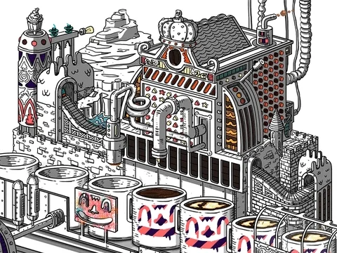
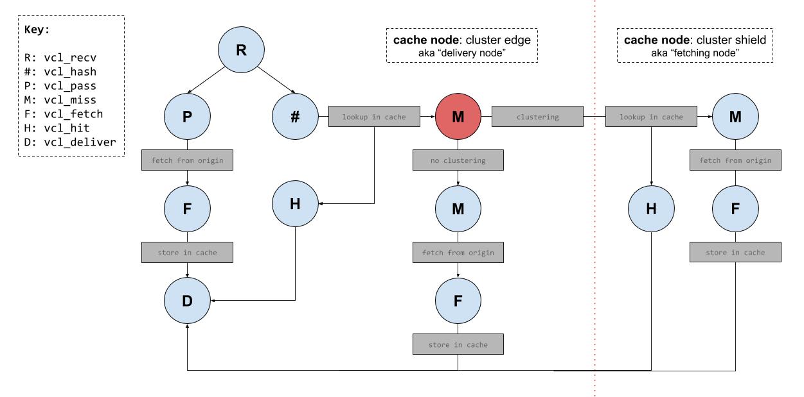
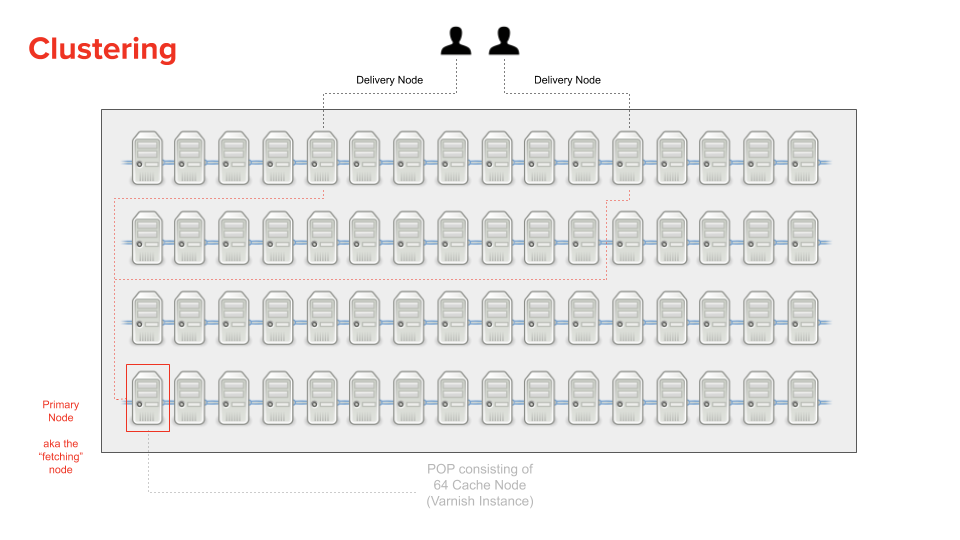

Fastly Varnish
UPDATE
As of October 2020 I joined the Fastly team to help improve Developer Relations 🎉
This means one of my many responsibilities will be to make this blog post redundant by ensuring the developer.fastly.com content is as relevant and valuable as possible.
But until that time, remember that this post was written (and updated), from the perspective of a long time customer, over many years and so the tone and personality of this blog post doesn’t represent the opinions of Fastly in any way.
If you have any questions, then feel free to reach out to me.
In this post I’m going to be explaining how the Fastly CDN works, with regards to their ‘programmatic edge’ feature (i.e. the ability to execute code on cache servers nearest to your users).
We will be digging into quite a few different areas of their implementation, such as their clustering solution, shielding, and various gotchas and caveats to their service offering.
Be warned: this post is a monster!
It’ll take a long time to digest this information…
Introduction
Fastly utilizes ‘free’ software (Varnish) and extends it to fit their purposes, but this extending of existing software can make things confusing when it comes to understanding what underlying features work and how they work.
In short: Varnish is an HTTP accelerator.
More concretely it is a web application that acts like a HTTP reverse-proxy.
You place Varnish in front of your application servers (those that are serving HTTP content) and it will cache that content for you. If you want more information on what Varnish cache can do for you, then I recommend reading through their introduction article (and watching the video linked there as well).
Fastly is many things, but for most people they are a CDN provider who utilise a highly customised version of Varnish. This post is about Varnish and explaining a couple of specific features (such as hit-for-pass and serving stale) and how they work in relation to Fastly’s implementation of Varnish.
One stumbling block for Varnish is the fact that it only accelerates HTTP, not HTTPS. In order to handle HTTPS you would need a TLS/SSL termination process sitting in front of Varnish to convert HTTPS to HTTP. Alternatively you could use a termination process (such as nginx) behind Varnish to fetch the content from your origins over HTTPS and to return it as HTTP for Varnish to then process and cache.
Simple, right?
Note: Fastly helps both with the HTTPS problem, and also with scaling Varnish in general.
The reason for this post is because when dealing with Varnish and VCL it gets very confusing having to jump between official documentation for VCL and Fastly’s specific implementation of it. Even more so because the version of Varnish Fastly are using is now quite old and yet they’ve also implemented some features from more recent Varnish versions. Meaning you end up getting in a muddle about what should and should not be the expected behaviour (especially around the general request flow cycle).
Ultimately this is not a “VCL 101”. If you need help understanding anything mentioned in this post, then I recommend reading:
Fastly also has a couple of excellent articles on utilising the
VaryHTTP header, which is highly recommended reading.
Lastly, as of May 2020, Fastly has started rolling out an updated developer portal which hopes to address some of the ‘documentation’ issues I’ve noted in this post.
Fastly reached out to me to review their updated developer portal (inc. the new layout of their reference and API documentation) and requested my feedback. I was happy to report that (other than a few minor comments) I found it to be a good start and I’m very much looking forward to many future improvements.
OK, let’s crack on…
Varnish Basics
Varnish is a ‘state machine’ and it switches between these states via calls to a return function (where you tell the return function which state to move to). The various states are:
recv: request is received and can be inspected/modified.hash: generate a hash key from host/path and lookup key in cache.hit: hash key was found in the cache.miss: hash key was not found in the cache.pass: content should be fetched from origin, regardless of if it exists in cache or not, and response will not be cached.pipe: content should be fetched from origin, and no other VCL will be executed.fetch: content has been fetched, we can now inspect/modify it before delivering it to the user.deliver: content has been cached (or not, depending on what youreturninvcl_fetch) and ready to be delivered to the user.
For each state there is a corresponding subroutine that is executed. It has the form vcl_<state>, and so there is a vcl_recv, vcl_hash, vcl_hit etc.
As an example, in vcl_recv to change state to “pass” you would execute return(pass). If you were in vcl_fetch and wanted to avoid caching the content (i.e. move to vcl_pass before moving to vcl_deliver), then you would execute return(pass) otherwise executing return(deliver) from vcl_fetch would cache the origin response and move you to vcl_deliver directly.
For a state such as vcl_miss, when that state function finishes executing it will automatically trigger a request to the origin/backend service to acquire the requested content. Once the content is requested, then we end up at vcl_fetch where we can then inspect the response from the origin.
This is why at the end of vcl_miss we change state by calling return(fetch). It looks like we’re telling Varnish to ‘fetch’ data but really we’re saying move to the next logical state which is actually vcl_fetch.
Lastly, as Varnish is a state machine, we have the ability to ‘restart’ a request (while also keeping any modifications you might have made to the request intact). To do that you would call return(restart).
 ^^ Varnish in action
States vs Actions
According to Fastly vcl_hash is the only exception to the rule of return(<state>) because the value you provide to the return function is not a state per se. The state function is called vcl_hash but you don’t execute return(hash). Instead you execute return(lookup).
Fastly suggests this is to help distinguish that we’re performing an action and not a state change (i.e. we’re going to lookup the requested resource within the cache).
Although vcl_miss’s return(fetch) is a bit ambiguous considering we could maybe argue it’s also performing an ‘action’ rather than a state change. Let’s also not forget operations such as return(restart) which looks to be triggering an ‘action’ rather than a state change (in that example you might otherwise expect to execute something like return(recv)).
Varnish Default VCL
When using the free version of Varnish, you’ll typically implement your own custom VCL logic (e.g. add code to vcl_recv or any of the other common VCL subroutines). But it’s important to be aware that if you don’t return an action (e.g. return(pass), or trigger any of the other available Varnish ‘states’), then Varnish will continue to execute its own built-in VCL logic which sits beneath your custom VCL.
You can view the ‘default’ (or ‘builtin’) logic for each version of Varnish via GitHub:
- Varnish v2.1 (the version used by Fastly)
- Varnish v3.0
- Varnish v4.0
- Varnish v5.0
Note: after v3 Varnish renamed the file from
default.vcltobuiltin.vcl.
But things are slightly different with Fastly’s Varnish implementation (which is based off Varnish version 2.1.5).
Specifically:
- no
return(pipe)invcl_recv, they dopassthere - some modifications to the
syntheticinvcl_error - …and God knows what else.
Fastly Default VCL
On top of the built-in VCL the free version of Varnish uses, Fastly also includes its own ‘default’ VCL logic alongside your custom VCL.
When creating a new Fastly ‘service’, this default VCL is added automatically to your new service. You are then free to remove it completely and replace it with your own custom VCL if you like.
See the link below for what this default VCL looks like, but in there you’ll notice code comments such as:
#--FASTLY RECV BEGIN
...code here...
#--FASTLY RECV END
Note: those specific portions of the default code define critical behaviour that needs to be defined whenever you want to write your own custom VCL.
Fastly has some guidelines around the use (or removal) of their default VCL which you can learn more about here.
Below are some useful links to see Fastly’s default VCL:
- Fastly’s Default VCL (full service context)
- Fastly’s Default VCL (each state split into separate files)
Note: Fastly also has what they call a ‘master’ VCL which runs outside of what we (as customers) can see, and this VCL is used to help Fastly scale varnish (e.g. handle things like their custom clustering solution).
fastly’s master VCL be all like ^^
Custom VCL
When adding your own custom VCL code you’ll need to ensure that you add Fastly’s critical default behaviours, otherwise things might not work as expected.
The way you add their defaults to your own custom VCL code is to add a specific type of code comment, for example:
sub vcl_recv {
#FASTLY recv
}
See their documentation for more details, but ultimately these code comments are ‘macros’ that get expanded into the actual default VCL code at compile time.
It can be useful to know what the default VCL code does (see links in previous section) because it might affect where you place these macros within your own custom code (e.g. do you place it in the middle of your custom sub routines or at the start or the end).
This is important because, for example, the default behaviours Fastly defines for vcl_recv is to set a backend for your service. Your custom VCL can of course override that backend, but where you define your custom code that does that overriding might not function correctly if placed in the wrong place.
Here is an example of why it’s important to know what is happening inside of these macros: we had a conditional comment that looked something like the following…
if (req.restarts == 0) {
...set backend...
}
…later on in our VCL we would trigger a request restart (e.g. return(restart)), but now req.restarts would be equal to 1 and not zero and so when the request restarted we wouldn’t set the backend.
Now, this of course is a bug in our code and has nothing to do with the default Fastly VCL (yet). But what’s important to now be aware of is that our requests didn’t just ‘fail’ but were sent to a different origin altogether (which was extremely confusing to debug at the time).
Turns out what was happening was that the default Fastly VCL was selecting a default backend for us, and this selection was based on the age of the backend!
To quote Fastly directly…
We choose the first backend that was created that doesn’t have a conditional on it. If all of your backends have conditionals on them, I believe we then just use the first backend that was created. If a backend has a conditional on it, we assume it isn’t a default. That backend is only set under the conditions defined, so then we look for the oldest backend defined that doesn’t have a conditional to make it the default.
Be Careful!
We experienced a problem that broke our production site and it was related to implementing our own vcl_hash subroutine.
The problem wasn’t as obvious as you might think. We didn’t implement vcl_hash to change the hashing algorithm, but instead we wanted to add some debug log calls into it.
We looked at the VCL that Fastly generated before we added our own vcl_hash subroutine and that VCL looked like the following…
sub vcl_hash {
#--FASTLY HASH BEGIN
#if unspecified fall back to normal
{
set req.hash += req.url;
set req.hash += req.http.host;
set req.hash += "#####GENERATION#####";
return (hash);
}
#--FASTLY HASH END
}
We thought “OK, that’s what Fastly is generating, so we’ll just let them continue generating that code, nothing special we need to do” …wrong!
So we added the following code to our own VCL…
sub vcl_hash {
#FASTLY hash
call debug_info;
return(hash)
}
The expectation was that the #FASTLY hash macro would still include all the code from inbetween #--FASTLY HASH BEGIN and #--FASTLY HASH END (see the earlier code snippet).
What actually ended up happening was that the Fastly macro dynamically changed itself to not include critical behaviours
Notice the set req.hash += req.url; and set req.hash += req.http.host; that they originally were generating? Yup. They were no longer included. This caused the system caching to blow up.
The code that was being generated now looked like the following…
#--FASTLY HASH BEGIN
# support purge all
set req.hash += req.vcl.generation;
#--FASTLY HASH END
So to fix the problem we had to put those missing settings manually back into our own vcl_hash subroutine…
sub vcl_hash {
#FASTLY hash
set req.hash += req.url;
set req.hash += req.http.host;
call debug_info;
return(hash);
}
Interestingly Fastly’s default VCL doesn’t require us to also set set req.hash += "#####GENERATION#####";, so they happily keep that part within their generated code 🤦
Example Boilerplate
Before we move on, while we’re discussing custom VCL, I’d like to share with you some VCL boilerplate I typically start out all new projects with (which I then modify to suit the project’s requirements, but ultimately this VCL consists of all the standard stuff you’d typically would need):
######################################################################################
#
# detailed blog post on fastly's implementation details:
# http://www.integralist.co.uk/posts/fastly-varnish/
#
# fastly custom vcl boilerplate:
# https://docs.fastly.com/vcl/custom-vcl/creating-custom-vcl/#fastlys-vcl-boilerplate
#
# states defined in this file:
# vcl_recv
# vcl_error
# vcl_hash
# vcl_pass
# vcl_miss
# vcl_hit
# vcl_fetch
# vcl_deliver
#
######################################################################################
table deny_list {
"/bad-thing-1": "true",
"/bad-thing-2": "true",
}
sub set_backend {
set req.backend = F_httpbin;
if (req.http.Host == "example-stage.acme.com/") {
set req.backend = F_httpbin_stage;
}
}
sub vcl_recv {
#FASTLY recv
call set_backend;
# configure purges to require api authentication:
# https://docs.fastly.com/en/guides/authenticating-api-purge-requests
#
if (req.method == "FASTLYPURGE") {
set req.http.Fastly-Purge-Requires-Auth = "1";
}
# force HTTP to HTTPS
#
# related: req.http.Fastly-SSL
# https://docs.fastly.com/en/guides/tls-termination
#
if (req.protocol != "https") {
error 601 "Force SSL";
}
# fastly 'tables' are different to 'edge dictionaries':
# https://docs.fastly.com/en/guides/about-edge-dictionaries
#
if (table.lookup(deny_list, req.url.path)) {
error 600 "Not found";
}
# don't bother doing a cache lookup for a request type that isn't cacheable
if (req.method !~ "(GET|HEAD|FASTLYPURGE)") {
return(pass);
}
if (req.restarts == 0) {
# nagios/monitoring cache bypass
#
if (req.url ~ "123") {
set req.http.X-Monitoring = "true";
return(pass);
}
}
return(lookup);
}
sub vcl_error {
#FASTLY error
# fastly synthetic error responses:
# https://docs.fastly.com/en/guides/creating-error-pages-with-custom-responses
#
if (obj.status == 600) {
set obj.status = 404;
synthetic {"
<!doctype html>
<html>
<head>
<meta charset="utf-8">
<title>Error</title>
</head>
<body>
<h1>404 Not Found (varnish)</h1>
</body>
</html>
"};
return(deliver);
}
# fastly HTTP to HTTPS 301 redirect:
# https://docs.fastly.com/en/guides/generating-http-redirects-at-the-edge
#
# example:
# curl -sD - http://example.acme.com/
# curl -H Fastly-Debug:1 -sLD - -o /dev/null http://example.acme.com/?cachebust=$(uuidgen)
#
if (obj.status == 601 && obj.response == "Force SSL") {
set obj.status = 301;
set obj.response = "Moved Permanently";
set obj.http.Location = "https://" req.http.host req.url;
synthetic {""};
return (deliver);
}
}
sub vcl_hash {
#FASTLY hash
set req.hash += req.url;
set req.hash += req.http.host;
# call debug_info_hash;
return(hash);
}
sub vcl_pass {
#FASTLY pass
}
sub vcl_miss {
#FASTLY miss
return(fetch);
}
sub vcl_hit {
#FASTLY hit
}
sub vcl_fetch {
#FASTLY fetch
# fastly caching directive:
# https://docs.fastly.com/en/guides/cache-control-tutorial
#
# example:
# define stale behaviour if none provided by origin
#
if (beresp.http.Surrogate-Control !~ "(stale-while-revalidate|stale-if-error)") {
set beresp.stale_if_error = 31536000s; // 1 year
set beresp.stale_while_revalidate = 60s; // 1 minute
}
# fastly stale-if-error:
# https://docs.fastly.com/en/guides/serving-stale-content
#
if (beresp.status >= 500 && beresp.status < 600) {
if (stale.exists) {
return(deliver_stale);
}
}
# hit-for-pass:
# https://www.integralist.co.uk/posts/fastly-varnish/#hit-for-pass
#
if (beresp.http.Cache-Control ~ "private") {
return(pass);
}
return(deliver);
}
sub vcl_deliver {
#FASTLY deliver
# fastly internal state information:
# https://docs.fastly.com/en/guides/useful-variables-to-log
#
set resp.http.Fastly-State = fastly_info.state;
if (req.http.X-Monitoring == "true") {
set resp.http.X-Monitoring = req.http.X-Monitoring;
}
return(deliver);
}
UPDATE 2020.02.25: Fastly have published a blog post that details what they consider to be VCL anti-patterns and offer solutions/alternative patterns: https://www.fastly.com/blog/maintainable-vcl
Fastly TTLs
When Fastly caches your content, it of course only caches it for a set period of time (known as the content’s “Time To Live”, or TTL). Fastly has some rules about how it determines a TTL for your content.
Their ‘master’ VCL sets a TTL of 120s (this comes from Varnish rather than Fastly) when no other VCL TTL has been defined and if no cache headers were sent by the origin.
Fastly does a similar thing with its own default VCL which it uses when you create a new service. It looks like the following and increases the default to 3600s (1hr):
if (beresp.http.Expires || beresp.http.Surrogate-Control ~ "max-age" || beresp.http.Cache-Control ~"(s-maxage|max-age)") {
# keep the ttl here
} else {
# apply the default ttl
set beresp.ttl = 3600s;
}
Note: 3600 isn’t long enough to persist your cached content to disk, it will exist in-memory only. See their documentation on “Why serving stale content may not work as expected” for more information.
You can override this VCL with your own custom VCL, but it’s also worth being aware of the priority ordering Fastly gives when presented with multiple ways to determine your content’s cache TTL…
beresp.ttl = 10s: caches for 10sSurrogate-Control: max-age=300caches for 5 minutesCache-Control: max-age=10caches for 10sExpires: Fri, 28 June 2008 15:00:00 GMTcaches until this date has expired
As we can see from the above list, setting a TTL via VCL takes ultimate priority even if caching headers are provided by the origin server.
DNS TTL Caching
There are two fundamental pieces of information I’m about to describe…
Fastly only uses the first IP returned from a DNS lookup, and will cache it until the DNS’ TTL expires. A failed DNS lookup for a service without a Fastly ‘health check’ (see docs) would lead to 600 seconds (10 minutes!) of stale IP use before attempting to requery the DNS.
An example of why this is bad: we had a 60s DNS TTL to align with that of AWS load balancers, but we discovered we were getting Fastly errors for ten minutes instead of just 1 minute.Fastly does offer a ‘High Availability’ feature (on request) which allows for traffic distribution across multiple IPs returned from a DNS lookup, rather than just using one until the next DNS lookup.
Caching Priority List
Fastly has some rules about the various caching response headers it respects and in what order this behaviour is applied. The following is a summary of these rules:
Surrogate-Controldetermines proxy caching behaviour (takes priority overCache-Control) †.Cache-Controldetermines client caching behaviour.Cache-Controldetermines both client/proxy caching behaviour if noSurrogate-Control†.Cache-Controldetermines both client/proxy caching behaviour if it includes bothmax-ageands-maxage.Expiresdetermines both client/proxy caching behaviour if noCache-ControlorSurrogate-Controlheaders.Expiresignored ifCache-Controlis also set (recommended to avoidExpires).Pragmais a legacy cache header only recommended if you need to support older HTTP/1.0 protocol.
† except when
Cache-Controlcontainsprivate.
Next in line is Surrogate-Control (see my post on HTTP caching for more information on this cache header), which takes priority over Cache-Control. The Cache-Control header itself takes priority over Expires.
Note: if you ever want to debug Fastly and your custom VCL then it’s recommended you create a ‘reduced test case’ using their Fastly Fiddle tool. Be aware this tool shares code publicly so don’t put secret codes or logic into it! Don’t forget to add
returnstatements to the functions in the Fiddle UI, otherwise the default Fastly boilerplate VCL will be executed and that can cause confusion if your service typically doesn’t use it! e.g. httpbin origin was sending back a 500 andvcl_fetchwas triggering a restart and I didn’t know why. I discovered I had to addreturn(deliver)invcl_fetchto prevent Fastly boilerplate from executing!
Fastly Default Cached Status Codes
The CDN (Fastly) doesn’t cache all responses. It will not cache any responses with a status code in the 5xx range, and it will only cache a tiny subset of responses with a status code in the 4xx and 3xx range.
The status codes it will cache by default are:
200 OK203 Non-Authoritative Information300 Multiple Choices301 Moved Permanently302 Moved Temporarily404 Not Found410 Gone
Note: in VCL you can allow any response status code to be cached by executing
set beresp.cacheable = true;withinvcl_fetch(you can also change the status code if you like to look like it was a different code withset beresp.status = <new_status_code>;).
Fastly Request Flow Diagram
There are various request flow diagrams for Varnish (example) and generally they separate the request flow into two sections: request and backend.
So handling the request, looking up the hash key in the cache, getting a hit or miss, or opening a pipe to the origin are all considered part of the “request” section. Whereas fetching of the content is considered part of the “backend” section.
The purpose of the distinction is because Varnish likes to handle backend fetches asynchronously. This means Varnish can serve stale data while a new version of the cached object is being fetched. This means less request queuing when the backend is slow.
But the issue with these diagrams is that they’re not all the same. Changes between Varnish versions and also the difference in Fastly’s implementation make identifying the right request flow tricky.
Below is a diagram of Fastly’s VCL request flow (including its WAF and Clustering logic). This is a great reference for confirming how your VCL logic is expected to behave.
{kind=link}
Fastly-Debug
Fastly will display extra information about a request/response flow within its HTTP response headers if the request was issued with a Fastly-Debug HTTP request header (set with a value of 1).
Some of the extra headers you’ll find in the response are:
Fastly-Debug-DigestFastly-Debug-PathFastly-Debug-TTLSurrogate-ControlSurrogate-KeyX-Cache-HitsX-CacheX-Served-By(reports fetching node, see Clustering)
Note: the
Surrogate-*response headers are typically set by an origin server and are otherwise stripped by Fastly.
Some of the following information will make reference to ‘delivery’ and ‘fetching’ nodes. It’s probably best you read ahead to the section on clustering to understand what these concepts mean in the scope of Fastly’s system design. Once you understand them, come back here and the next few sentences will make more sense.
The quick summary is this:
- delivery node: the cache server your request is first routed to (and which sends the response back to you).
- fetching node: the cache server that actually makes a request to your origin, before returning the origin response back to the delivery node.
When using Fastly-Debug:1 to inspect debug response headers, we might want to look at fastly-state, fastly-debug-path and fastly-debug-ttl. These would have values such as…
< fastly-state: HIT-STALE
< fastly-debug-path: (D cache-lhr6346-LHR 1563794040) (F cache-lhr6324-LHR 1563794019)
< fastly-debug-ttl: (H cache-lhr6346-LHR -10.999 31536000.000 20)
The fastly-debug-path suggests we delivered from the delivery node lhr6346, while we fetched from the fetching node lhr6324.
The fastly-debug-ttl header suggests we got a HIT (H) from the delivery node lhr6346, but this is a misleading header and one you need to be careful with.
Note: it may take a few requests to see numbers populating the
Fastly-Debug-TTL, as the request needs to either land on the fetching node, or a delivery node where the content exists in temporary memory. If you see-it might be because you arrived at a delivery node that doesn’t have it in-memory.
Why this header is misleading is actually quite a hard thing to explain, and Fastly has discussed the reasoning for the confusion in at least a couple different talks I’ve seen (one being: https://vimeo.com/showcase/6623864/video/376921467 which I highly recommend btw).
In essence, the HIT state is recorded at the fetching node. When the response makes its way back to the delivery node, it will then set the fastly-debug-ttl. But this doesn’t mean that the cache HIT happened at the delivery node, only that the header was set there.
The reason this is a concern is that you don’t necessarily know if the request did indeed go to the fetching node or whether the stale content actually came from the delivery node’s in-memory cache. The only way to be sure is to check the fastly-state response header.
The fastly-state header is ultimately what I use to verify where something has happened. If I see a HIT (or HIT-STALE), then I know I got a cache HIT from the delivery node (e.g. myself or someone else has already requested the resource via this delivery node).
Note: a reported
HITcan in some cases be because the first cache server your request was routed to was the primary node (again, see clustering for details of what a ‘primary’ node is in relation to a ‘fetching’ node).
If I see instead a HIT-CLUSTER (or HIT-STALE-CLUSTER) it means I’m the first person to reach this delivery node and request this resource, and so there was nothing cached and thus we went to the fetching node and got a cache HIT there.
Another confusing aspect to fastly-debug-ttl is that with regards to stale-while-revalidate you could end up seeing a - in the section where you might otherwise expect to see the grace period of the object (i.e. how long can it be served stale for while revalidating). This can occur when the origin server hasn’t sent back either an ETag header or Last-Modified header. Fastly still serves stale content if the stale-while-revalidate TTL is still valid but the output of the fastly-debug-ttl can be confusing and/or misleading.
Something else to note, while I write this August 2019 update is that the
fastly-debug-ttlonly every displays the ‘grace’ value when it comes tostale-if-error, meaning if you’re trying to check if you’re servingstale-while-revalidateby looking at the grace period you might get confused when you see thestale-if-errorgrace period (or worse a-value), this is because thefastly-debug-ttlheader isn’t as granular as it should be. Fastly have indicated that they intend on making updates to this header in the future in order for the values to be much clearer.
Lastly, when dealing with shielding the fastly-debug-ttl can be misleading in another sense which is: imagine the fetching node got a MISS (so it fetched content from origin and returned it to the delivery node). The delivery node will cache the response from the fetching node (including the MISS reported by fastly-debug-ttl) and so even if another request reaches the name delivery node, it will report a MISS, HIT combination.
thanks Fastly, for this totally not confusing setup
304 Not Modified
Although not specifically mentioned in the above diagram it’s worth noting that Fastly doesn’t execute vcl_fetch when it receives a 304 Not Modified from origin, but it will use any Cache-Control or Surrogate-Control values defined on that response to determine how long the stale object should now be kept in cache.
If no caching headers are sent with the 304 Not Modified response, then the stale object’s TTL is refreshed. This means its age is set back to zero and the original max-age TTL is enforced.
Ultimately this means if you were hoping to execute logic defined within vcl_fetch whenever a 304 Not Modified was returned (e.g. dynamically modify the stale/cached object’s TTL), then that isn’t possible.
UPDATE 2019.08.10
Fastly reached out to me to let me know that this diagram is now incorrect.
Specifically, the request flow for a hit-for-pass (see below for details) was:
RECV, HASH, HIT, PASS, DELIVER
Where vcl_hit would return(pass) once it had identified the cached object as being a hit-for-pass object.
It is now:
RECV, HASH, PASS, DELIVER
Where after the object is returned from vcl_hash’s lookup, it’s immediately identified as being a HFP (hit-for-pass) and thus triggers vcl_pass as the next state, and finally vcl_deliver.
What this ultimately means is there is some redundant code later on in this blog post where I make reference to serving stale content. Specifically, I mention that vcl_hit required some custom VCL for checking the cached object’s cacheable attribute for the purpose of identifying whether it’s a hit-for-pass object or not.
Note: this
vcl_hitcode logic is still part of the free Varnish software, but it has been made redundant by Fastly’s version.
Error Handling
In Varnish you can trigger an error using the error directive, like so:
error 900 "Not found";
Note: it’s common to use the made-up
9xxrange for these error triggers (900, 901, 902 etc).
Once executed, Varnish will switch to the vcl_error state, where you can construct a synthetic error to be returned (or do some other action like set a header and restart the request).
if (obj.status == 900) {
set obj.status = 500;
set obj.http.Content-Type = "text/html";
synthetic {"<h1>Hmmm. Something went wrong.</h1>"};
return(deliver);
}
In the above example we construct a synthetic error response where the status code is a 500 Internal Server Error, we set the content-type to HTML and then we use the synthetic directive to manually construct some HTML to be the ‘body’ of our response. Finally we execute return(deliver) to jump over to the vcl_deliver state.
If you want to send a synthetic JSON response (maybe your Fastly service is fronting an API that returns JSON), then this is possible:
if (obj.status == 401) {
set obj.http.Content-Type = "application/json";
set obj.http.WWW-Authenticate = "Basic realm=Secured";
synthetic "{" +
"%22error%22: %22401 Unauthorized%22" +
"}";
return(deliver);
}
We discuss JSON generation in more detail later.
Unexpected State Change
Now, I wanted to talk briefly about error handling because there are situations where an error can occur, and it can cause Varnish to change to an unexpected state. I’ll give a real-life example of this…
We noticed that we were getting a raw 503 Backend Unavailable error from Varnish displayed to our customers. This is odd? We have VCL code in vcl_fetch (the state that you move to once the response from the origin has been received by Fastly/Varnish) which checks the response status code for a 5xx and handles the error there. Why didn’t that code run?
Well, it turns out that vcl_fetch is only executed if the backend/origin was considered ‘available’ (i.e. Fastly could make a request to it). In this scenario what happened was that our backend was available but there was a network issue with one of Fastly’s POPs which meant it was unable to route certain traffic, resulting in the backend appearing as ‘unavailable’.
So what happens in those scenarios? In this case Varnish won’t execute vcl_fetch because of course no request was ever made (how could Varnish make a request if it thinks the backend is unavailable), so instead Varnish jumps from vcl_miss (where the request to the backend would be initiated from) to vcl_error.
This means in order to handle that very specific error scenario, we’d need to have similar code for checking the status code (and trying to serve stale, see later in this article for more information on that) within vcl_error.
UPDATE 2019.11.07
Fastly’s Fiddle tool now shows a compiler error that suggests 8xx-9xx are codes used internally by Fastly and that we should use the 6xx range instead.
According to Fastly the 900 code is often a dangeous code to use in custom VCL. In 8xx territory, they have a special case attached to 801, which is used for redirects to TLS in the case of requests coming in on HTTP. So if you manually trigger an 801, weird stuff happens.
6xx and 7xx are clean. 600, 601 and 750 are by far the most popular codes used in customer configs apparently. In the standards range, we have a special case attached to 550, for some reason, lost in the mists of time, but otherwise errors in the standards range are interpreted as specified in the IETF spec
State Variables
Each Varnish ‘state’ has a set of built-in variables you can use.
Below is a list of available variables and which states they’re available to:
Based on Varnish 3.0 (which is the only explicit documentation I could find on this), although you can see in various request flow diagrams for different Varnish versions the variables listed next to each state. But this was the first explicit list I found. Fastly themselves recommend this Varnish reference but that doesn’t indicate which variables are read vs write.
UPDATE 2020.12.11
The Fastly ‘Developer Hub’ now has an official reference 🎉
developer.fastly.com/reference/vcl/variables/
Here’s a quick key for the various states:
- R: recv
- F: fetch
- P: pass
- M: miss
- H: hit
- E: error
- D: deliver
- I: pipe
- #: hash
| R | F | P | M | H | E | D | I | # | |
|---|---|---|---|---|---|---|---|---|---|
req.* |
R/W | R/W | R/W | R/W | R/W | R/W | R/W | R/W | R/W |
bereq.* |
R/W | R/W | R/W | R/W | |||||
obj.hits |
R | R | |||||||
obj.ttl |
R/W | R/W | |||||||
obj.grace |
R/W | ||||||||
obj.* |
R | R/W | |||||||
beresp.* |
R/W | ||||||||
resp.* |
R/W | R/W | |||||||
For the values assigned to each variable:
R/Wis “Read and Write”,
andRis “Read”
andWis “Write”
It’s important to realise that the above matrix is based on Varnish and not Fastly’s version of Varnish. But there’s only one difference between them, which is the response object resp isn’t available within vcl_error when using Fastly.
When you’re dealing with vcl_recv you pretty much only ever interact with the req object. You generally will want to manipulate the incoming request before doing anything else.
Note: the only other reason for setting data on the
reqobject is when you want to keep track of things (because, as we can see from the above table matrix, thereqobject is available to R/W from all available states).
Once a lookup in the cache is complete (i.e. vcl_hash) we’ll end up in either vcl_miss or vcl_hit. If you end up in vcl_hit, then generally you’ll look at and work with the obj object (this obj is what is pulled from the cache - so you’ll check properties such as obj.cacheable for dealing with things like ‘hit-for-pass’).
If you were to end up at vcl_miss instead, then you’ll probably want to manipulate the bereq object and not the req object because manipulating the req object doesn’t affect the request that will shortly be made to the origin. If you decide at this last moment you want to send an additional header to the origin, then you would set that header on the bereq and that would mean the request to origin would include that header.
Note: this is where understanding the various state variables can be useful, as you might want to modify the
reqobject for the sake of ‘persisting’ a change to another state, where asbereqmodification will only live for the lifetime of thevcl_misssubroutine.
Once a request is made, the content is copied into the beresp variable and made available within the vcl_fetch state. You would likely want to modify this object in order to change its ttl or cache headers because this is the last chance you have to do that before the content is stored in the cache.
Finally, the beresp object is copied into resp and that is what’s made available within the vcl_deliver state. This is the last chance you have for manipulating the response that the client will receive. Changes you make to this object doesn’t affect what was stored in the cache (because that time, vcl_fetch, has already passed).
Anonymous Objects
There are two scenarios in which a pass occurs. One is that you return(pass) from vcl_recv explicitly, and the other is that vcl_recv executes a return(lookup) (which is the default behaviour) and the lookup results in a hit-for-pass object.
In both cases, an anonymous object is created, and the next customer-accessible VCL hook that will run is vcl_pass. Because the object is anonymous, any changes you make to it in vcl_fetch are not persisted beyond that one client request.
The only difference between the behaviour of a return(pass) from vcl_recv and a return(pass) resulting from a hit-for-pass in the cache, is that req.digest will be set. Fastly’s internal varnish engineering team state that req.digest is not an identifier for the object but rather a property of the request, which has been set simply because the request went through the hash process.
An early return(pass) from vcl_recv doesn’t go through vcl_hash and so no hash (req.digest) is added to the anonymous object. If there is a hash (req.digest) available on the object inside of vcl_pass, it doesn’t mean you retain a reference to the cache object.
Forcing Request to Origin
While we’re discussing state variables, I recently (2020.03.04) discovered that the req object has a set of properties exposed that will enable you to force a request through to the origin while allowing the response to be cached.
These properties are:
req.hash_always_missreq.hash_ignore_busy
You would need to set them to true in vcl_recv:
set req.hash_always_miss = true;
set req.hash_ignore_busy = true;
It’s important to realize that getting a request through to the origin is a different scenario to using return(pass) in either vcl_recv and vcl_fetch (as might have been your first thought).
In the case of vcl_recv a return(pass) would cause the request to not only bypass a cache lookup (thus going to origin to fetch the content), but also the primary/fetching node wouldn’t have executed vcl_fetch! The fetching of content would have happened on the delivery node and so another client (if they reached a different delivery node, might end up at the fetching node and find no cached content there).
In the case of vcl_fetch a return(pass) would mean the response isn’t cached. So you can see how both the vcl_recv and vcl_fetch states executing return(pass) isn’t the same thing as letting a request bypass the cache but still having the origin response be cached!
When using hash_always_miss we’re causing the cache lookup to think it got a miss (rather than ‘passing’ it altogether). So this means features such as request collapsing are still intact.
Where as the use of hash_ignore_busy disables request collapsing and so this will result in a ‘last cached wins’ scenario (e.g. if you have two requests now going simultaneously to origin, whichever responds first will be cached but then the one that responds last will overwrite the first cached response).
request collapsing in action
Clustering
Now that we know there are state variables available, and we understand generally when and why we would use them, let’s now consider the problem of ‘clustering’. Because if you don’t understand Fastly’s clustering design, then you’ll end up in a situation where data you’re setting on these variables are being lost and you won’t know why.
To help make clustering easier to understand I’ve created a diagram (below) of some Varnish internal ‘states’. In this diagram are two sections ‘cluster edge’ and ‘cluster shield’. Both represent individual cache servers running Varnish, but for the sake of simplicity I’ve omitted most of the Varnish states from the ‘cluster shield’ node.
{kind=link}
Note: this diagram does not cover all the states available to Fastly’s implementation of Varnish. There is also
vcl_logwhich is executed aftervcl_deliver. There is alsovcl_errorwhich can be triggered from multiple other state functions.
The directional lines drawn on the diagram represent various request flows you might see in a typical Varnish implementation (definitely in my case at any rate). Of course these aren’t the only request flows you might see; there are numerous ways for a request to flow through the Varnish state machine.
Before we jump into some request flow examples (and then further onto the discussion of clustering), let’s take a moment to define some terminology that will help us throughout the rest of this post…
Terminology
The terminology I will use from here on, will be as follows:
- delivery node (i.e. the ‘cluster edge’)
- fetching node (i.e. the ‘cluster shield’)
- primary node (i.e. fetching node for a specific object)
To explain the terminology:
When a cache server within a Fastly POP receives a request for an object, that server is ‘acting’ as the delivery node (as it will be the server responsible for returning a response to the client).
If the delivery node has an empty cache, then the request won’t immediately reach the origin. Instead the hash key for the requested resource/object will be used to identify a “primary” node, which is the node that will always (†) ‘act’ as a fetching node (i.e. it’s the server that will be responsible for handling the request for that specific resource/object).
† well, almost always. Except when the delivery node that ends up being selected is the “primary” node. Then the primary node is no longer acting as a fetching node, as it’s forced to act as a delivery node instead. Requiring a “secondary” node to act as a backup for those scenarios.
In some cases you’ll notice a “fetching node” being refered to as a “cluster node”. this can help to understand some of Fastly’s APIs (e.g. is_cluster).
Delivery node request flow
Let’s now consider a simple example request flow using that diagram. For this example, a node has been selected within the POP and it will start to process the request (so the server node is ‘acting’ as the delivery node).
- client issues a request (and delivery node identified).
- request is received and
vcl_recvis called. - imagine the
vcl_recvlogic triggers thereturn(pass)directive. - the state will change to
vcl_pass(skipping cache lookup). - after
vcl_passhas completed, the request flows through to origin. - the origin responds and the state changes to
vcl_fetch. - modifications to the response object will be cached.
- after
vcl_fetchhas completed, response content is stored in the cache. - the state changes to
vcl_deliver(modifications here are sent to client). - response is sent back to the client.
That’s just one example route that could be taken, and I conveniently chose that example because it meant only requiring one cache server to serve the response to a client (the fetching node, and the concept of clustering, didn’t come into effect in that example).
Example without Clustering
What’s important to understand though is the fact that Fastly’s infrastructure does mean (in specific scenarios) a request could indeed be handled by two separate cache servers. The initial cache server (the delivery node), and then potentially a second cache server (the fetching node).
When that happens, it is referred to as “clustering” but to more easily understand clustering, let’s consider what happens if it didn’t exist…
Without clustering what happens is this: the cache server that gets the request will generate a ‘hash key’ based upon the requested URL host and path. That hash key is then used to identify the resource in the cache that resides on the server.
If the cache doesn’t contain the requested resource, then the cache server will allow the request to flow through to the origin server which will respond with the appropriate content and the cache will be populated with that content for the next time that resource is requested.
This all works, but here’s the problem…
A Fastly POP contains 64 individual caching servers. All of them have a unique cache. That means every single cache server would at some point have to go back to the origin for the same resource that was already cached at a different cache server. That’s not an efficient system design.
To solve that problem, Fastly came up with the concept of Clustering.
Clustering is the coordination of two nodes within a POP to fulfill a request. The following image (and explanation) should help to clarify why this design is much better.
{kind=link}
With clustering, the hash key for a requested resource is used, firstly to lookup the content in the cache of the current server (e.g. the delivery node), but also to identify a specific node that will be used for fetching the content from origin (and is referred to as the “primary” node, or fetching node) for when the content cannot be found in the delivery node’s cache.
This design means that multiple requests to different delivery nodes can all go to the same “primary” cache node (e.g. the fetching node) to fetch the content from the origin if they themselves didn’t have the requested resource cached.
This way, if we had ten requests for the same resource, and each request ended up at a different delivery node (and each delivery node failed to locate the resource in their cache) then only one of those ten requests would need to go to the origin (via the fetching node).
When the fetching node gets the content from the origin, it sticks the response in its cache and the response is sent back to the delivery node which also caches the response but only in memory (not on disk!).
But how does the fetching node stop all ten requests from each delivery node from reaching the origin, I hear you ask? Well, this is what’s referred to as “request collapsing”. It’s the process of blocking in-flight requests (for the same resource) until at least one request for that resource has completed.
In most cases the cache server that initially receives the request will not be the “primary”. But not always. Sometimes the cache server that initially handles the incoming client request IS the primary (e.g. what was the fetching node)!
Why is that you ask? It’s because the server that the request is initially sent to is picked at random. So what happens in that scenario?
This is where Fastly introduce the concept of a “secondary” node. It exists much like the “primary” does, to act as a cache layer before a request reaches the origin and exists for those specific times where the primary node is forced to act as the delivery node (e.g. just because a primary node is acting as a delivery shouldn’t mean it goes directly to the origin; the “secondary” helps to prevent that).
Note: for the most part you don’t need to worry too much about primary and secondary nodes, and only really need to know about the general concept of clustering consisting of a delivery node and a fetching node.
Fetching node request flow
Now go back to the earlier ‘request flow’ diagram. Try to imagine a request reaching a delivery node, and the node having an empty cache.
You’d find the state changes would be vcl_recv, vcl_hash, vcl_miss (the red one, which is an internal fastly operation that checks to see if A. clustering is enabled, which it is by default and also B. is the current server a fetching node).
In this case, clustering is enabled and we’re not on the fetching node. So the request flows from the delivery node to the fetching node where that server’s cache is checked and either the vcl_hit or vcl_miss states will be triggered.
Also, because any node within the cluster can be selected as the delivery node, it means there could be an in-memory copy of the cached content existing there. In that scenario the request would yield a cache HIT and thus only that one cache server is handling the request (e.g. no need to then go to the primary/fetching node).
Why are there different states running on different nodes?
One other thing to be aware of is that when a request flows from a delivery node to a fetching node (because the content isn’t found in the cache on the delivery node) the request will have to flow back to the delivery node in order for the client to receive a response!
Think about it, if the request is proxied from a delivery node to a fetching node, then it isn’t possible for the fetching node to respond to the client because the caller wasn’t the client but the delivery node.
This is why for most standard request flows you’ll find that the vcl_recv, vcl_hash, vcl_pass, vcl_deliver states are all handled by the delivery node, while vcl_miss, vcl_hit and vcl_fetch are documented as being executed on the fetching node.
This is because when the delivery node’s cache lookup fails to find any cached content, the request is proxied to the fetching node where it will again attempt a cache lookup. From that point (let’s say no content was cached there either) the fetching node will execute a vcl_miss, then vcl_fetch and ultimately it’ll have to stop there and return the response to the delivery node so it can change to the vcl_deliver state in order to send the response to the client.
Now as far as Fastly’s documentation is concerned (as of 2019.11.08) they A.) don’t document the fact that vcl_hash runs on the delivery node, and B.) is incorrect with regards to vcl_pass, which they claim runs on the fetching node (which it doesn’t, for the most part, as it is designed to break clustering).
When I pointed Fastly to their documentation, their response was:
“if you pass in recv, you’re saying no to cache lookup, and no to request collapsing, so there’s no reason to cluster the request”
Which was then followed with…
“big sigh, ok, I’m filing an issue”
You definitely can end up in vcl_pass on a fetching node, but admittedly it happens less frequently because you would have to return(pass) from either vcl_hit or vcl_miss (and that’s not a typical state change flow for most people).
^^ whenever I learn something new about Fastly
Breaking clustering
If we’re on a delivery node and we have a state that executes a return(restart) directive, then we actually break ‘clustering’.
This means the request will go back to the delivery node and that node will handle the full request cycle. This is done for reasons of performance, such as finding stale content in the vcl_deliver state on the delivery node and wanting to serve that stale content †
† we’ll learn about serving stale later.
Now go back to the earlier ‘request flow’ diagram. Try to imagine a request reaching a delivery node, and the node having an empty cache, but also that clustering has been broken (due to a return(restart) being triggered in vcl_deliver on the delivery node).
You’d find the state changes would be vcl_recv, vcl_hash, vcl_miss (the red one, which is an internal fastly operation that checks to see if A. clustering is enabled, which it is by default and also B. is the current server a fetching node).
In this case, clustering is enabled and we’re not on the fetching node. So the request flows from the delivery node to the fetching node where that server’s cache is checked and either the vcl_hit or vcl_miss states will be triggered. But ultimately the request will flow back to the delivery node, where we’ll reach its vcl_deliver state.
From there the vcl_deliver triggers a return(restart), which as we now know breaks clustering, and so we end up back in vcl_recv of the delivery node.
At this point the request will reach vcl_hash and we might find we again reach vcl_miss (the ‘internal’ red one), but this time clustering is broken so we now reach your own code’s vcl_miss of the delivery node and thus the delivery node will proxy the request onto the origin and then execute the vcl_fetch state (instead of those steps happening on the fetching node).
Avoid breaking clustering
So what if breaking clustering is something you want to avoid? Let me start by saying I personally have never found a reason to avoid breaking clustering when executing a return(restart) but that doesn’t mean good reasons don’t exist.
In order to avoid breaking the clustering process you’ll need to utilize the Fastly-Force-Shield: 1 request header. This header will re-enable clustering so that we again use multiple server nodes within a POP when executing the different VCL subroutine states.
Legacy terminology
Notice the naming of this header (Fastly-Force-Shield), it uses what’s considered by Fastly now to be legacy terminology.
To explain: Fastly has historically used the term “shield” to describe the fetching node, as per the concept we now refer to as “clustering”. But it wasn’t always called clustering.
Long ago clustering was referred to as “shielding”, but in more recent times Fastly designed an extension to clustering which became a new feature also called Shielding. Fastly changed the old “shielding” terminology to “clustering”, thus allowing the new Shielding feature to be more easily distinguished (even though the underlying concepts are closely related).
The problem of persisting state
OK, so two more really important things to be aware of at this point:
- Data added to the
reqobject cannot persist across boundaries (except for when initially moving from the edge to the cluster). - Data added to the
reqobject can persist a restart, but not when they are added from the cluster environment.
For number 1. that means: req data you set in vcl_recv and vcl_hash will be available in states like vcl_pass and vcl_miss.
For number 2. that means: if you were in vcl_deliver and you set a value on req and then triggered a restart, the value would be available in vcl_recv. Yet, if you were in vcl_miss for example and you set req.http.X-Foo and let’s say in vcl_fetch you look at the response from the origin and see the origin sent you back a 5xx status, you might decide you want to restart the request and try again. But if you were expecting X-Foo to be set on the req object when the code in vcl_recv was re-executed, you’d be wrong. That’s because the header was set on the req object while it was in a state that is executed on a fetching node; and so the req data set there doesn’t persist a restart.
Summary: modifications on the fetching node don’t persist to the delivery node.
If you’re starting to think: “this makes things tricky”, you’d be right :-)
The earlier diagram visualizes the approach for how a request inside of a POP will reach a specific cache node (i.e. “clustering”) but it doesn’t cover how “shielding” works, which effectively is a nested clustering process.
Let’s dig into Shielding next…
Shielding
Shielding is a designated POP that a request will flow through before reaching your origin.
As mentioned earlier, clustering is the coordination of two nodes within a POP, and this ‘clustering’ happens within every POP. The shield POP is no different from any other POP in its fundamental behaviour.
Note: when people start talking about shielding and its “Shield POP”, you’ll usually find the terminology of “POP” changes to “Edge POP” as a way to help distinguish that there are two separate POPs involved in the discussion. I personally don’t do that. I just call an Edge POP a POP and when talking about shielding I’ll say “Shield POP”.
The purpose of shielding is to give extra protection to your origin, because multiple users will arrive at different POPs (due to their locality) and so a POP in the UK might not have a cached object, while a POP in the USA might have a cached version of the resource. To help prevent the UK user from making a request back to the origin, we can select a POP nearest the origin to act as a single point of access.
Now when the UK request comes through and there is no cached content within that POP, the request wont go to origin, it’ll go to the shield POP which will hopefully have the content cached (if not then the shield POP sends the request onto the origin).
But ultimately the content either already cached at the shield (or is about to be cached at the shield if it had no cache) will be bubbled back to the UK POP where the content will be cached there as well.
Note: there isn’t any real latency concern with using shielding because Fastly optimizes the network BGP routing between POPs. The only thing to ensure is that your shield POP is located next to your origin because Fastly can’t optimize the connection from the shield POP to the origin (it can only optimize traffic within its own network).
This also gives us extra nomenclature to distinguish POPs. Before we learnt about shielding, we just knew there were ‘POPs’ but now we know that with shielding enabled we have ‘edge’ POPs and a singular ‘shield’ POP for a particular Fastly service.
I’ll link here to a Fastly-Fiddle (created by a Fastly engineer) that demonstrates the clustering/shielding flow. If that fiddle no longer exists by the time you read this then I’ve made a copy of it in a gist. It’s interesting to see how the various APIs for identifying a server node come together.
Lastly we should be aware that if for some reason there is a network issue in the region of your selected ‘shield’ POP, then Fastly will first (from the ‘edge’ POP) check the health of the shield POP before forwarding the request there. If the shield is unhealthy (e.g. maybe there is a network outage in its region), then the request will be forwarded directly to your origin.
Caveats of Fastly’s Shielding
First thing to note is that if your service has a restart statement, then be warned that this doesn’t just disable clustering but also shielding. To re-enable clustering you can use Fastly-Force-Shield but there is no way to re-enable shielding unless you manually copy/paste the relevant logic from Fastly’s generated VCL.
Be careful with changes you make to a request as they could result in the lookup hash to change between the edge POP nodes and shield POP nodes (so it’s likely best you make changes to the bereq object in vcl_miss rather than the req object within vcl_recv). Also the shield POP will be using the same Domain/Host UI configuration and so if you change the Host header, then proxying the request from the edge POP to the shield POP would result in a breakage as the shield POP won’t recognize the Host of the incoming request and thus will not know which ‘service’ to direct the request onto.
Also, be aware that the “backend” will change when shielding is enabled. Traditionally (i.e. without shielding) you defined your backend with a specific value (e.g. an S3 bucket or a domain such as https://app.domain.com) and it would stay set to that value unless you yourself implemented custom vcl logic to change its value.
But with shielding enabled, the delivery node will dynamically change the backend to be a shield node value (as it’s effectively always going to pass through that node if there is no cached content found). Once on the delivery node within the shield POP, its “backend” value is set to whatever your actual origin is (e.g. an S3 bucket).
So, if you dynamically set your backend in VCL, be sure to A.) set it before the fastly recv macro is executed, and B.) be sure to only set it on the shield POP otherwise your request will go from the edge POP direct to your origin and not your shield POP.
Note: be careful with ‘shared code’ (e.g. VCL code you reuse across multiple services) because if you add a conditional such as
if (req.backend.is_shield) { /* execute code on edge POP */ }then this is fine when executing this code on a service with shielding enabled, but it won’t work as intended on a service that doesn’t use shielding! Because a service without shielding will not have the backend set to a shield, so that conditional will fail to match.
It’s probably best to only modify your backends dynamically whilst your VCL is executing on the shield (e.g. if (!req.backend.is_shield), maybe abstract in a variable declare local var.shield_node BOOL;) and to also only restart a request in vcl_deliver when executing on a node within the shield POP.
You might also need to modify vcl_hash so that the generated hash is consistent with the edge POP’s delivery node if your shield POP nodes happen to modify the request! Remember that modifying either the host or the path will cause a different cache key to be generated and so modifying that in either the edge POP or the shield POP means modifying the relevant vcl_hash subroutine so the hashes are consistent between them.
sub vcl_hash {
# we do this because we want the cache key to be identical at the edge and
# at the shield. Because the shield rewrites req.url (but not the edge), we
# need align vcl_hash by using the original Host and URL.
set req.hash += req.http.X-Original-URL;
set req.hash += req.http.X-Original-Host;
#FASTLY hash
return(hash);
}
Note: alternatively you could move rewriting of the URL to a state after the hash lookup, such as vcl_miss (e.g. modifying the
bereqobject).
Be careful with non-idempotent changes. For example, things like the Vary header being modified on the shield POP and then again on the edge POP, as this could result in the edge POP getting a poor HIT ratio due to the fact that the shield has appended a header and then that header is appended again as part of the edge POP execution.
Consideration needs to be given to the use of req.backend.is_shield when you get a 5xx (or any other uncacheable error code) back from the origin to the shield POP, because it means an ‘pass’ state will be triggered. When the response reaches the delivery node within the edge POP, the pass state will cause clustering to be disabled and so the origin will no longer be the shield POP (as it was at the start of the request flow).
Lastly, when enabling shielding, make sure to deploy your VCL code changes first before enabling shielding. This way you avoid a race condition whereby a shield has old VCL (i.e. no conditional checks for either Fastly-FF or req.backend.is_shield) and thus tries to do something that should only happen on the edge cache node.
Debugging Shielding
If you want to track extra information when using shielding, then use (in combination with either req.backend.is_origin or !req.backend.is_shield) the values from server.datacenter and server.hostname which can help you identify the POP as your shielding POP (remember there is only one POP that is designated as your shield, so this can come in handy).
Note: remember that, although a statistically small chance, the edge POP that is reached by a client request could be the shield POP so your mechanism for checking if something is a shield needs to account for that scenario.
Additionally, there is this Fastly-Fiddle which clarifies the req.backend.is_cluster API which actually is different to similarly named APIs such as req.backend.is_origin and req.backend.is_shield, so let’s dig into that quickly…
is_cluster vs is_origin vs is_shield
There are a few properties hanging off the req.backend object in VCL…
is_cluster: indicates when the request has come from a clustering node (e.g. fetching node).is_origin: indicates if the request will be proxied to an origin server (e.g. your own backend application).is_shield: indicates if the request will be proxied to a shield POP (which happens when shielding is enabled).
If you try to access is_origin from within the vcl_recv state subroutine, for example, it will be cause a compiler error. This is because that API is only available to fetching nodes (and specifically only states that would result in a request being proxied, meaning although vcl_hit runs on a fetching node, that state would not have access to is_origin).
So depending on what you’re trying to verify, it might be preferable to use the negated is_shield approach for checking if the request is going to be proxied to origin or a shield pop node.
Undocumented APIs
req.http.Fastly-FFfastly_info.is_cluster_edgefastly_info.is_cluster_shieldfastly.ff.visits_this_service
req.http.Fastly-FF
The first API we’ll look at is: req.http.Fastly-FF which indicates if a request has come from a Fastly server.
It’s worth mentioning that it’s not really safe to use req.http.Fastly-FF because it can be set by a client making the request, and so there is no guarantee of its accuracy.
Also, the use of req.http.Fastly-FF can become complicated if you have multiple Fastly services chained one after the other because it means Fastly-FF could be set by a Fastly service not owned by you (i.e. the reported value is misleading).
fastly_info.is_cluster_edge and fastly_info.is_cluster_shield
With regards to is_cluster there are also some additional undocumented APIs we can use:
fastly_info.is_cluster_edge:trueif the currentvcl_state subroutine is running on a delivery node.fastly_info.is_cluster_shield:trueif the currentvcl_state subroutine is running on a fetching node.
It’s important to realize that is_cluster_edge will only ever report true from vcl_deliver, as (just like req.backend.is_cluster) we have to come from a clustering/fetching node first. The vcl_recv state can’t know if it’s going to go into clustering at that stage of the request hence it reports as false there.
With vcl_fetch it knows it has come from the delivery node and thus we’ve gone into ‘clustering’ mode, hence it can report is_cluster_shield as true.
So as a more fleshed out example, if we tried to log all three cluster APIs in all VCL subroutines (and imagine we have clustering enabled with Fastly, which is the default behaviour), then we would find the following results…
vcl_recv:req.backend.is_cluster: nofastly_info.is_cluster_edge: nofastly_info.is_cluster_shield: no
vcl_hash:req.backend.is_cluster: nofastly_info.is_cluster_edge: nofastly_info.is_cluster_shield: no
vcl_miss:req.backend.is_cluster: nofastly_info.is_cluster_edge: nofastly_info.is_cluster_shield: yes
vcl_fetch:req.backend.is_cluster: nofastly_info.is_cluster_edge: nofastly_info.is_cluster_shield: yes
vcl_deliver:req.backend.is_cluster: yesfastly_info.is_cluster_edge: yesfastly_info.is_cluster_shield: no
fastly.ff.visits_this_service
The last undocumented API we’ll look at will be fastly.ff.visits_this_service which indicates for each server node how many times it has seen the request currently being handled. This helps us to execute a piece of code only once (maybe authentication needs to happen at the edge only once).
Let’s see what this looks like in a clustering scenario like shown a moment ago…
vcl_recv:fastly.ff.visits_this_service:0(we’re on a delivery node and we’ve never seen this request before)
vcl_hash:fastly.ff.visits_this_service:0(we’re still on the same delivery node so the reported value is the same)
vcl_miss:fastly.ff.visits_this_service:1(we’ve jumped to the fetching node so we know it’s been seen once before somewhere)
vcl_fetch:fastly.ff.visits_this_service:1(we’re on the same fetching node so the value is reported the same)
vcl_deliver:fastly.ff.visits_this_service:0(we’re back onto the original delivery node so the value is reported as 0 again).
Even if you restart the request, the value of the variable will go back to zero on the delivery node. See this fiddle for an example.
Note: when you introduce shielding you’ll find that the value increases to
2when we reachvcl_recvon the delivery node inside the shield POP.
The following code snippet demonstrates how to run code either on the edge POP or the shield POP whilst also protecting against the scenario where the code is copy/pasted into a service that doesn’t have shielding enabled (see also: Caveats of Fastly’s Shielding).
if (req.backend.is_shield || fastly.ff.visits_this_service < 2) {
# edge POP
}
if (!req.backend.is_shield && fastly.ff.visits_this_service >= 2) {
# shield POP
}
# one liner for variable assignment
if(req.backend.is_shield, "edge", if(fastly.ff.visits_this_service < 2, "edge", "shield"))
Note: be careful with shielding because if the shield POP got a 5xx from the origin then it’ll trigger an internal PASS state and so once we’re back at the delivery node inside the edge POP, if we try to check if the backend is the ‘shield’ using
req.backend.is_shieldthen it won’t match because the origin for the edge POP will no longer be the shield (clustering has been disabled because of the ‘pass state’).
Breadcrumb Trail
Let’s now consider a requirement for creating a breadcrumb trail of the various states a request moves through (we’ll do this by defining a X-VCL-Route HTTP header). Implementing this feature is great for debugging purposes as it’ll validate your understanding of how your requests are flowing through the varnish state machine.
First I’m going to show you the basic outline of the various vcl state subroutines and a set of function calls. Next I’ll show you the code for those function calls and talk through what they’re doing.
Note: the code examples will be simplified for sake of brevity and to highlight the calls related to the breadcrumb trail functionality.
In essence though, we’re using the understanding we have for the delivery node and fetching node boundaries and ensuring that while on the fetching node we track information in Varnish objects (e.g. things like req, obj, beresp etc) that are able to persist crossing those boundaries.
This means when going from vcl_fetch to vcl_deliver we can’t track information on the req object because it’ll be lost when we move over to vcl_deliver and so we track it in the beresp object that vcl_fetch has access to. We do this because we know that beresp is copied over to vcl_deliver and exposed inside of vcl_deliver as the resp object.
Similarly for vcl_error, we track information in its obj reference because when we move over to vcl_deliver the obj reference will be copied over as the resp object.
From vcl_deliver we’re then free to copy the tracked information from the X-VCL-Route header (stored in the resp object) into the req object (in case we need to restart the request and keep tracking information after a restart).
Remember that vcl_pass and vcl_miss both run on the fetching node and so again tracking information on the req object won’t persist when moving over to vcl_deliver. That’s why although we track information on the req object within those state subroutines, we in fact (once we’ve reached vcl_fetch) copy those tracked values into the beresp object available to vcl_fetch for the reasons we described earlier.
OK, enough talking, let’s see the code…
include "debug_info"
sub vcl_recv {
call debug_info_recv;
#FASTLY recv
return(lookup);
}
sub vcl_hash {
#FASTLY hash
set req.hash += req.url;
set req.hash += req.http.host;
call debug_info_hash;
return(hash);
}
sub vcl_miss {
#FASTLY miss
call debug_info_miss;
return(fetch);
}
sub vcl_pass {
#FASTLY pass
call debug_info_pass;
}
sub vcl_fetch {
#FASTLY fetch
call debug_info_fetch;
return(deliver);
}
sub vcl_error {
#FASTLY error
call debug_info_error;
return(deliver);
}
sub vcl_deliver {
call debug_info_deliver;
...other code...
call debug_info_send;
#FASTLY deliver
return(deliver);
}
The thing to look out for (in the above code) are the function calls that start with debug_info_ (e.g. debug_info_recv, debug_info_hash …etc).
These functions are all defined within a VCL file called debug_info.vcl, which we import at the top of the example code (i.e. include "debug_info").
Once that file is imported we will have access to the various debug_info_ functions that the VCL state subroutines are calling.
The other thing you’ll notice is that we have two separate function calls within vcl_deliver. We have the standard debug_info_deliver (as described a moment ago), but we also have debug_info_send.
The debug_info_send isn’t strictly necessary (e.g. the code within it could be moved inside of debug_info_deliver) but I wanted to distinguish between functions that collected data and this function that was responsible for sending the collected data back within the response.
Let’s now take a look at that debug_info VCL and then we’ll explain what the code is doing…
# This file sets a X-VCL-Route response header.
#
# X-VCL-Route has a baseline format of:
#
# pop: <value>, node: <value>, state: <value>, host: <value>, path: <value>
#
# pop = the POP where the request is currently passing through.
# node = whether the cache node is a delivery node or fetching node
# state = internal fastly variable that reports state flow (req waited for collapsing or clustered).
# host = the full host name, without the path or query parameters.
# path = the full path, including query parameters.
#
# Additional to this baseline we include information relevant to the subroutine state.
sub debug_info_recv {
declare local var.context STRING;
set var.context = "";
if (req.restarts > 0) {
set var.context = req.http.X-VCL-Route + ", ";
}
set req.http.X-VCL-Route = var.context + "VCL_RECV(" +
"pop: " + if(req.backend.is_shield, "edge",
if(fastly.ff.visits_this_service < 2, "edge", "shield")) + " [" + server.datacenter + ", " + server.hostname + "], " +
"node: cluster_edge, " +
"state: " + fastly_info.state + ", " +
"host: " + req.http.host + ", " +
"path: " + req.url +
")";
}
sub debug_info_hash {
set req.http.X-VCL-Route = req.http.X-VCL-Route + ", VCL_HASH(" +
"pop: " + if(req.backend.is_shield, "edge",
if(fastly.ff.visits_this_service < 2, "edge", "shield")) + " [" + server.datacenter + ", " + server.hostname + "], " +
"node: cluster_edge, " +
"state: " + fastly_info.state + ", " +
"host: " + req.http.host + ", " +
"path: " + req.url +
")";
}
sub debug_info_miss {
set req.http.X-PreFetch-Miss = ", VCL_MISS(" +
"pop: " + if(req.backend.is_shield, "edge",
if(fastly.ff.visits_this_service < 2, "edge", "shield")) " [" server.datacenter ", " server.hostname "], " +
"node: cluster_" + if(fastly_info.is_cluster_shield, "shield", "edge") + ", " +
"state: " + fastly_info.state + ", " +
"host: " + bereq.http.host + ", " +
"path: " + bereq.url +
")";
}
sub debug_info_pass {
set req.http.X-PreFetch-Pass = ", " if(fastly_info.state ~ "^HITPASS", "VCL_HIT", "VCL_PASS") "(" +
"pop: " + if(req.backend.is_shield, "edge",
if(fastly.ff.visits_this_service < 2, "edge", "shield")) + " [" + server.datacenter + ", " + server.hostname + "], " +
"node: cluster_" + if(fastly_info.is_cluster_shield, "shield", "edge") + ", " +
"state: " + fastly_info.state + ", " +
"host: " + req.http.host + ", " +
"path: " + req.url + ", " +
")";
}
sub debug_info_fetch {
set beresp.http.X-Track-VCL-Route = req.http.X-VCL-Route;
set beresp.http.X-PreFetch-Pass = req.http.X-PreFetch-Pass;
set beresp.http.X-PreFetch-Miss = req.http.X-PreFetch-Miss;
set beresp.http.X-PostFetch = ", VCL_FETCH(" +
"pop: " + if(req.backend.is_shield, "edge",
if(fastly.ff.visits_this_service < 2, "edge", "shield")) + " [" + server.datacenter + ", " + server.hostname + "], " +
"node: cluster_" + if(fastly_info.is_cluster_shield, "shield", "edge") + ", " +
"state: " + fastly_info.state + ", " +
"host: " + req.http.host + ", " +
"path: " + req.url + ", " +
"status: " + beresp.status + ", " +
"stale: " + if(stale.exists, "exists", "none") + ", " +
if(beresp.http.Cache-Control ~ "private", "cache_control: private, return: pass", "return: deliver") +
")";
}
sub debug_info_error {
declare local var.error_page BOOL;
set var.error_page = false;
set obj.http.X-VCL-Route = req.http.X-VCL-Route + ", VCL_ERROR(" +
"pop: " + if(req.backend.is_shield, "edge",
if(fastly.ff.visits_this_service < 2, "edge", "shield")) + " [" + server.datacenter + ", " + server.hostname + "], " +
"node: cluster_" + if(fastly_info.is_cluster_shield, "shield", "edge") + ", " +
"state: " + fastly_info.state + ", " +
"host: " + req.http.host + ", " +
"path: " + req.url + ", " +
"status: " + obj.status + ", " +
"stale: " + if(stale.exists, "exists", "none") + ", " +
")";
}
sub debug_info_deliver {
# only track the previous route flow if we've come from vcl_fetch
# otherwise we'll end up displaying the uncached request flow as
# part of this cache hit request flow (which would be confusing).
if (resp.http.X-Track-VCL-Route && fastly_info.state ~ "^(MISS|PASS)") {
set req.http.X-VCL-Route = resp.http.X-Track-VCL-Route;
if (resp.http.X-PreFetch-Pass) {
set req.http.X-VCL-Route = req.http.X-VCL-Route + resp.http.X-PreFetch-Pass;
}
if (resp.http.X-PreFetch-Miss) {
set req.http.X-VCL-Route = req.http.X-VCL-Route + resp.http.X-PreFetch-Miss;
}
if (resp.http.X-PostFetch) {
set req.http.X-VCL-Route = req.http.X-VCL-Route + resp.http.X-PostFetch;
}
} elseif (fastly_info.state ~ "^ERROR") {
# otherwise track in the request object any request flow information that has occurred from an error request flow
# which should include either the original vcl_fetch flow or the vcl_hit flow.
set req.http.X-VCL-Route = resp.http.X-VCL-Route;
} elseif (fastly_info.state ~ "^HIT($|-)") {
# otherwise track the initial vcl_hit request flow.
set req.http.X-VCL-Route = req.http.X-VCL-Route + ", VCL_HIT(" +
"pop: " + if(req.backend.is_shield, "edge",
if(fastly.ff.visits_this_service < 2, "edge", "shield")) + " [" + server.datacenter + ", " + server.hostname + "], " +
"node: cluster_shield, " +
"state: " + fastly_info.state + ", " +
"host: " + req.http.host + ", " +
"path: " + req.url + ", " +
"status: " + resp.status + ", " +
"cacheable: true, " +
"return: deliver" +
")";
}
# used to extend the baseline X-VCL-Route (set below)
declare local var.context STRING;
set var.context = "";
# there is one state subroutine that we have no way of tracking information for: vcl_hit
# this is because the only object we have available with R/W access is the req object
# and modifications to the req object don't persiste from cluster node to edge node (e.g. vcl_deliver)
# this means we need to utilise fastly's internal state to see if we came from vcl_hit.
#
# we also use this internal state variable to help identify other states progressions such as
# STALE (stale content found in case of an error) and ERROR (we've arrived to vcl_deliver from vcl_error).
#
# Documentation (fastly_info.state):
# https://support.fastly.com/hc/en-us/community/posts/360040168391/comments/360004718351
if (fastly_info.state ~ "^HITPASS") {
set var.context = ", cacheable: uncacheable, return: pass";
} elseif (fastly_info.state ~ "^ERROR") {
set var.context = ", custom_error_page: " + resp.http.CustomErrorPage;
}
set req.http.X-VCL-Route = req.http.X-VCL-Route + ", VCL_DELIVER(" +
"pop: " + if(req.backend.is_shield, "edge",
if(fastly.ff.visits_this_service < 2, "edge", "shield")) + " [" + server.datacenter + ", " + server.hostname + "], " +
"node: cluster_edge, " +
"state: " + fastly_info.state + ", " +
"host: " + req.http.host + ", " +
"path: " + req.url + ", " +
"status: " + resp.status + ", " +
"stale: " + if(stale.exists, "exists", "none") +
var.context +
")";
}
# this subroutine must be placed BEFORE the vcl_deliver macro `#FASTLY deliver`
# otherwise the setting of Fastly-Debug within this subroutine will have no effect.
sub debug_info_send {
unset resp.http.X-Track-VCL-Route;
unset resp.http.X-VCL-Route;
unset resp.http.X-PreFetch-Miss;
unset resp.http.X-PreFetch-Pass;
unset resp.http.X-PostFetch;
if (req.http.X-Debug) {
# ensure that when Fastly's own VCL executes it will be able to identify
# the Fastly-Debug request header as enabled.
set req.http.Fastly-Debug = "true";
# other useful debug information
set resp.http.Fastly-State = fastly_info.state;
set resp.http.X-VCL-Route = req.http.X-VCL-Route;
}
}
So I’ve already summarized the basic approach (i.e. ensure we set tracking information in Varnish objects that we know persist the boundary changes), but there are some interesting bits to take away from this code still…
Within debug_info_recv, because a request can be restarted, the breadcrumb trail may need to repeat the VCL states. So for example if a request was restarted we would want to see VCL_RECV(...) twice in the output to indicate that this was the flow of the request. To account for that I use a var.context variable to prepend the information from before the request to the new X-VCL-Route header being created now the request has restarted.
Next you’ll notice that we have a strange expression which we’re assigning to a pop field. This field represents whether the request is being executed at an ‘edge’ POP or a ‘shield’ POP (in the case that the Fastly service has shielding enabled)…
if(req.backend.is_shield, "edge", if(fastly.ff.visits_this_service < 2, "edge", "shield"))
We use the req.backend.is_shield API to tell us if the server is going to send the request to a shield POP or not, but unfortunately it’s not as straight forward as just saying “ok is_shield is false so we must be on a node within the shield POP already”.
The reason being, if the Fastly service doesn’t have shielding enabled then req.backend.is_shield will always return false! So that’s why we have that nested conditional check…
if(fastly.ff.visits_this_service < 2, "edge", "shield")
Instead of just printing shield when req.backend.is_shield is false we will now first check fastly.ff.visits_this_service (which we discussed earlier). This says “ok, if the returned value is less than two we know that we must be running within an edge POP, because if shielding was enabled and we were on a shield POP currently then the number of ‘views’ would be three or more at this point”.
Although I don’t demonstrate it here in this example code, debug_info_hash might need an extra conditional header check added to it to prevent tracking the vcl_hash execution. The reason you might want to do that is because vcl_hash is always executed (even though it can in some scenarios be a no-op!).
For example, in my own VCL code at work we have a process whereby we’ll restart a request if we have an error come back from the origin. The reason we restart the request is so we can serve a custom error page synthetically from the edge server. In order to do that we set a header in vcl_deliver before we restart (e.g. X-Error) and then we check it from within vcl_recv only if the req.restarts == 1. From that point in vcl_recv if X-Error is set we’ll trigger vcl_error by calling the error directive, and within vcl_error we’ll construct our synthetic custom error page.
Now the problem we have is that in the final X-VCL-Route sent back in the response we’ll see vcl_hash in the flow just after the second vcl_recv (which happens because of the restart in order to handle the custom error page logic), and that just …looks weird because it suggests to a viewer that vcl_hash had some sort of purpose for running, but it doesn’t!
So to avoid recording the vcl_hash execution I wrap the tracking code in a check for the X-Error header (e.g. if (!req.http.X-BF-Error) { track the execution }).
In debug_info_fetch you’ll see that I don’t assign to a X-VCL-Route header on the beresp object but a new X-Track-VCL-Route header. The reason for this is because the beresp object is going to be placed into the Varnish cache system once vcl_fetch has finished executing and we need to be careful about setting X-VCL-Route there.
The reason for the concern is due to new client requests. Imagine we set the tracking information onto the actual X-VCL-Route header on the beresp (which will be cached).
When a new request is received for that same resource we’ll go to vcl_hit because the resource is found in the cache and from there we’ll end up at vcl_deliver which would normally just check for a X-VCL-Route on the resp object it has been passed.
But in this scenario the resp object is the object pulled from the Varnish cache and so we might end up including the uncached request flow in the final X-VCL-Route header sent back for this secondary request!
That would be wrong because the secondary request should only report a recv > hash > hit > deliver and not recv > hash > miss > fetch > recv > hash > hit > deliver (which is what would happen otherwise!). See how easy it is for things to get dangerous and confusing!
With that in mind if we look at debug_info_deliver we’ll see that we only track the ‘uncached’ request flow if we can tell that we actually came from a cache MISS state…
if (resp.http.X-Track-VCL-Route && fastly_info.state ~ "^MISS") { track the data that was stored in X-Track VCL-Route }
If you want more information on
fastly_info.statesee this community comment.
You’ll also see in that same conditional block we then reconstruct a X-VCL-Route from the various temporary headers, such as X-PreFetch-Pass, X-PreFetch-Miss and X-PostFetch.
Remember that in vcl_hit we have no object that we can track information on that will be persisted to the delivery node where vcl_deliver is executed. This is because vcl_hit can go straight to vcl_deliver and there’s no inbetween state like vcl_fetch where we can borrow a Varnish object for tracking purposes like we do with vcl_miss and vcl_pass.
So to solve that problem you’ll see that we check to see if we came from a cache HIT state…
fastly_info.state ~ "^HIT($|-)"
Note: this will catch multiple types of hit flows, such as
HITorHIT-CLUSTERorHIT-STALE-CLUSTER.
Finally, in debug_info_send you’ll see that we make sure to unset any temporary response headers (e.g. X-Track-VCL-Route) so it doesn’t confuse people scanning the response headers we send back. We also don’t send this debug information back to the client unless they ask for it, which they can do by providing a req.http.X-Debug request header.
One interesting thing to note there is that in order to get Fastly to send back its own debug information the user needs to provide a Fastly-Debug request header, but to avoid having to rely on that knowledge we provide our own X-Debug (which we tell our engineers about) so they only have to remember one simpler request header to enable not only our own debugging information but Fastly’s as well.
In order then for the Fastly debug information to be included we have to do two things:
- manually
set req.http.Fastly-Debug = "true";in our VCL code. - ensure our
debug_info_sendis executed before the#FASTLY delivermacro (which is where they execute theirFastly-Debuglogic).
OK, let’s go back and revisit vcl_error…
The vcl_error subroutine is a tricky one because it exists on both the delivery node and the fetching node.
Meaning if you execute error 401 from vcl_recv, then vcl_error will execute in the context of the delivery node; whereas if you executed an error from a fetching node state like vcl_fetch, then vcl_error would execute in the context of the fetching node.
Meaning, how you transition information between vcl_error and vcl_deliver could depend on whether you’re on a delivery node or a fetching node.
This is why when on what are typically considered the fetching nodes, I don’t hardcode them a such. I use the following conditional check…
"node: cluster_" + if(fastly_info.is_cluster_shield, "shield", "edge") + ", " +
…this check means if the request is restarted, which we know this causes Fastly’s clustering behaviour to stop and for the request to flow through the same delivery node for all states, then we can change the reported node to be the delivery node instead of a fetching node for states such as MISS/PASS/FETCH.
Note: this conditional check could be improved by also checking for the existence of the
Fastly-Force-Shieldheader (which we talked about earlier). This is because if someone uses that header then it would force Fastly’s clustering behaviour to not be stopped.
To help explain this I’m going to give another real example, where I wanted to lookup some content in our cache and if it didn’t exist I wanted to restart the request and use a different origin server to serve the content.
To do this I expected the route to go from vcl_recv, to vcl_hash and the lookup to fail so we would end up in vcl_miss. Now from vcl_miss I could have triggered a restart, but anything I set on the req object at that point (such as any breadcrumb data appended to X-VCL-Route) would have been lost as we transitioned from the fetching node back to the delivery node (where vcl_recv is).
I needed a way to persist the “miss” breadcrumb, so instead of returning a restart from vcl_miss I would trigger a custom error such as error 901 and inside of vcl_error I would have the following logic:
set obj.http.X-VCL-Route = req.http.X-VCL-Route;
if (fastly_info.state ~ "^MISS") {
set obj.http.X-VCL-Route = obj.http.X-VCL-Route ",VCL_MISS(" req.http.host req.url ")";
}
set obj.http.X-VCL-Route = obj.http.X-VCL-Route ",VCL_ERROR";
if (obj.status == 901) {
set obj.http.X-VCL-Route = obj.http.X-VCL-Route ",VCL_ERROR(status: 908, return: deliver)";
return(deliver);
}
When we trigger an error an object is created for us. On that object I set our X-VCL-Route and assign it whatever was inside req.http.X-VCL-Route at that time †
† which would include
vcl_recv,vcl_hashandvcl_miss. Remember thereqobject does persist across the delivery node/fetching node boundaries, but only when going fromvcl_recv. After that, anything set onreqis lost when crossing boundaries.
Now we could have arrived at vcl_error from vcl_recv (e.g. if in our vcl_recv we had logic for checking Basic Authentication and none was found on the incoming request we could decide from vcl_recv to execute error 401) or we could have arrived at vcl_error from vcl_miss (as per our earlier example). So we need to check the internal Fastly state to identify this, hence checking fastly_info.state ~ "^MISS".
After that we append to the obj object’s X-VCL-Route header our current state (i.e. so we know we came into vcl_error). Finally we look at the status on the obj object and see it’s a 901 custom status code and so we append that information in order to know what happened.
But you’ll notice we don’t restart the request from vcl_error, because if we did come from vcl_miss the data in obj would be lost because ultimately it was set on a fetching node (as vcl_error would be running on the fetching node when coming from vcl_miss).
Instead we return(deliver), because all that data assigned to obj is guaranteed to be copied into resp for us to reference when transitioning to vcl_deliver on the delivery node.
Once we’re at vcl_deliver we continue to set breadcrumb tracking onto req.http.X-VCL-Route as we know that will persist a restart (as we’re still going to be executing code on the delivery node).
Phew! Well, that was NOT an easy task, and if you struggled to follow along. That’s OK because it’s hard to learn about all this stuff at once. Just keep coming back to this post as a reference point if you need to.
Thankfully by going through this process there will be very little about Varnish’s request flow that you won’t now understand or have the ability to work around in future if the right problem scenario presents itself.
Header Overflow Errors
One final thing to note about building a ‘breadcrumb trail’ like I’ve detailed above is that you’ll need to be careful about how many times you restart your request flow.
I’ve seen us restart our request up to three times (for multiple-backend failover resiliency) and it has resulted in a raw Varnish error of Header overflow to be returned in the response (the client won’t even record any network data at all, it’s as if the client compleletely flatlines).
Googling around I discovered some Fastly documentation which makes reference to a Header count…
Exceeding the limit results in a Header overflow error. A small portion of this limit is reserved for internal Fastly use, making the practical limit closer to 85.
To me this was quite an ambiguous statement and have the value set to 96 didn’t help elucidate the situation at all either. I had no idea what this really meant.
Was Fastly saying the overall request header size of X-VCL-Route was too large (hence a 400 Bad Request would be the typical response expected for that type of error) or did it mean that I could only set that specific header 96 times and I was reaching that limit due to the number of restarts (surely not?)
Even if I restarted the request flow three times, there’s only a total of eight VCL states and they don’t all get executed in a single request flow, so that’s only a maximum of 24 times I would have called set on the
X-VCL-Routeheader (way under the 96 limit).
Turns out it’s a bit more a broad range of possible problem causes than just that.
The official Fastly response to my question about what this documentation means was as follows…
header count = 96specifically means 96 headers can be present for an object (this includes the request and response headers). The header overflow can be caused by exceeding any of the limits defined in the documentation throughout the whole VCL process.
So it’s more likely that we were hitting the http header size limit, but it was being transformed into this raw Varnish error instead.
At any rate this is something to keep in mind and be mindful of.
Hit for Pass
You may notice in Varnish’s built-in vcl_fetch the following logic:
sub vcl_fetch {
if (!beresp.cacheable) {
return (pass);
}
if (beresp.http.Set-Cookie) {
return (pass);
}
return (deliver);
}
Now typically when you return(pass) you do that in vcl_recv to indicate to Varnish you do not want to lookup the content in the cache and to skip ahead to fetching the content from the origin. But when you return(pass) from vcl_fetch it causes a slightly different behaviour. Effectively we’re telling Varnish we don’t want to cache the content we’ve received from the origin.
In the case of the VCL logic above, we’re not caching this content because we can see there is a cookie set (indicating possibly unique user content).
You’ll probably also notice in some organisation’s own custom vcl_fetch the following additional logic:
if (beresp.http.Cache-Control ~ "private") {
return(pass);
}
This content isn’t cached simply because the backend has indicated (via the Cache-Control header) that the content is private and so should not be cached.
But you’ll find that even though you’ve executed a return(pass) operation, Varnish will still create an object and cache it.

The object it creates is called a “hit-for-pass” (if you look back at the Fastly request flow diagram above you’ll see it referenced) and it is given a ttl of 120s (i.e. it’ll be cached for 120 seconds).
Note: the ttl can be changed using vcl but it should be kept small. Varnish implements a type known as a ‘duration’ and takes many forms: ms (milliseconds), s (seconds), m (minutes), h (hours), d (days), w (weeks), y (years). For example,
beresp.ttl = 1h.
The reason Varnish creates an object and caches it is because if it didn’t, when return(pass) is executed and the content subsequently is not cached, then if another request is made for that same resource, we would find “request collapsing” causes a performance issue for users. What is ‘request collapsing’ I hear you ask? Well…
Request Collapsing
Request collapsing is where Varnish blocks requests for what looks to be the same uncached resource. It does this in order to prevent overloading your origin. So for example, if there are ten requests for an uncached resource, it’ll allow one request through to origin and block the other nine until the origin has responded and the content has been cached. The nine requests would then get the content from the cache.
But in the case of uncachable content (e.g. content that uses cookies typically will contain content that is unique to the user requesting the resource) users are blocked waiting for an existing request for that resource to complete, only to find that as the resource is uncacheable the request needs to be made again (this cycle would repeat for each user requesting this unique/uncacheable resource).
i.e. out of 10 requests for a resource that is ultimately uncacheable, the first request would go through while nine are blocked waiting for the first request to complete. The first request completes and oh-no, it can’t be cached, nevermind let’s unblock the second request (while the other eight are blocked). When the second request comes back we again realise it can’t be cached and the cycle repeats until all ten requests have completed.
As you can imagine, this is very bad because the requests for this uncachable content has resulted in sequential processing.
So when we “pass” inside of vcl_fetch Varnish prevents this bad sequential processing. It does this by creating a “hit-for-pass” object which has a short ttl of 120s, and so for the next 120s any requests for this same resource will not result in request collapsing (i.e. user requests to origin will not be blocked waiting for an already “in-flight” origin request to complete). Meaning, all requests will be sent straight through to the origin.
In order for this processing to work, we need vcl_hit to check for a “hit-for-pass” object. If we check Varnish’s built-in logic we can see:
sub vcl_hit {
if (!obj.cacheable) {
return (pass);
}
return (deliver);
}
What this does is it checks whether the object we found in the cache has the attribute cacheable set to ‘false’, and if it does we’ll not deliver that cached object to the user but instead skip ahead to fetching the resource again from origin.
By default this cacheable attribute is set to ‘true’, but when Varnish executes return(pass) from inside of vcl_fetch it caches the “hit-for-pass” object with the cacheable attribute set to ‘false’.
The reason the ttl for a “hit-for-pass” object is supposed to be short is because, for that period of time, your origin is susceptible to multiple requests. So you don’t want your origin to become overloaded by lots of traffic for uncacheable content.
It’s important to note that an object can’t be re-cached (let’s say the origin no longer sends a private directive) until either the hit-for-pass TTL expires or the hit-for-pass object is purged.
See this Varnish blog post for the full details.
Serving Stale
If we get a 5xx error from our origins we don’t cache them.
But instead of serving that 5xx to the user (or even a custom 500 error page), we’ll attempt to locate a ‘stale’ version of the content and serve that to the user instead (i.e. ‘stale’ in this case means a resource that was requested and cached previously, but the object was marked as being something that could be served stale if its ‘stale ttl’ has yet to expire).
The reason we do this is because serving old (i.e. stale) content is better than serving an error.
stale content is always better, right!
In order to serve stale we need to add some conditional checks into our VCL logic.
You’ll typically notice in both vcl_fetch and vcl_deliver there are checks for a 5xx status code in the response we got back from origin, and subsequently a further check for stale.exists if we found a match for a 5xx status code. It looks something like the following:
Note: you don’t have to run this code only from
vcl_deliver. It can be beneficial to do this viavcl_erroras well because if your origin is unreachable, then it means you’ll want to check for stale invcl_erroras well. Fastly gives an example of this in their documentation.
if (<object>.status >= 500 && <object>.status < 600) {
if (stale.exists) {
# ...
}
}
Where
<object>is eitherberesp(vcl_fetch) orresp(vcl_deliver).
When looking at the value for stale.exists, if it returns ‘true’, it is telling us that there is an object in the cache whose ttl has expired but as far as Varnish is concerned is still valid for serving as stale content. The way Varnish knows whether to keep a stale object around so it can be used for serving as stale content depends on the following settings:
set beresp.stale_while_revalidate = <N>s;
set beresp.stale_if_error = <N>s;
Where
<N>is the amount of time in seconds you want to keep the object for after its ttl has expired.
stale_while_revalidate: request received, obj found in cache, but ttl has expired (results in cache MISS), so we serve stale while we go to origin and request the content (†).stale_if_error: request received, obj found in cache, but ttl has expired, so we go to origin and the origin returns an error, so we serve stale.
† if successful, new content is cached and the TTL is updated to whatever the cache response headers dictate.
Ultimately this means that stale_if_error will only ever be initialized if stale_while_revalidate fails. Which begs the question…
Why use stale_if_error at all when we could just set stale_while_revalidate to a large value, and it would effectively result in the same outcome: stale content served to the user for a set period of time?
This is a question I don’t have an answer for, and I’ve yet to receive a satisfactory answer to from either Fastly or the dev community.
My own opinion on this is that if my origin is unable to serve a 200 OK response after 1hr of trying via stale_while_revalidate then something must be seriously wrong with my origin and so maybe that’s the appropriate indicator for what value I should give to it in comparison to the value I would set for stale_if_error (which would be the longest value possible).
It feels like setting both stale_while_revalidate and stale_if_error is kind of like ‘cargo culting’ (i.e. doing something because it’s always been done and so people presume it’s the correct way), but at the same time I would hate to find myself in a situation where there was a subtle difference between the two which had a very niche scenario that broke my user’s experience because I neglected to set both stale configurations.
Additionally, if these ‘stale’ settings aren’t configured in VCL, then you’ll need to provide them as part of Fastly’s Surrogate-Control header (see here for the details, but be aware that VCL configured values will take precedence over response headers from origin):
"Surrogate-Control": "max-age=123, stale-while-revalidate=172800, stale-if-error=172800"
The use of beresp.stale_if_error is effectively the same as Varnish’s beresp.grace. But be careful if your VCL already utilises Varnish’s original grace feature, because it will override any Fastly behaviour that is using the stale_if_error.
You can find more details on Fastly’s implementation here as well as a blog post announcing this feature here. If you want details on Varnish 4.0’s implementation of serving stale, see this post.
Why you might not be serving stale?
You might find that you’re not serving stale even though you would expect to be. This can be caused by a lack of shielding (an additional Fastly feature that’s designed to improve your hit ratio) as you can only serve a stale cached object if the request ended up being routed through the POP that has the content cached (which is more difficult without shielding enabled).
Another reason would be to use “soft purging” rather than hard purges.
Lastly, there’s one quirk of Fastly’s caching implementation you might need to know about: if you specify a max-age of less than 61 minutes, then your content will only be persisted into memory (and there are many situations where a cached object in memory can be removed). To make sure the object is persisted (i.e. cached) on disk and thus available for a longer period of time for serving stale, you must set a max-age above 61 minutes.
It’s worth reading fastly’s notes on why you might not be serving stale which additionally includes notes on things like the fact that their implementation is an LRU (Least Recently Used) cache, and so even if a cached object’s TTL has not expired it might be so infrequently requested/accessed that it’ll be evicted from the cache any way! The LRU affects both fresh (i.e. non-expired) objects and ‘stale’ objects (i.e. TTL has expired but they have stale config values that haven’t expired).
Stale for Client Devices
It’s worth reiterating a segment of the earlier caching priority list which is that Cache-Control can include serving stale directives such as stale-while-revalidate and stale-if-error, but they are typically utilized with Surrogate-Control more than they are with Cache-Control. If Fastly receives no Surrogate-Control but it does get Cache-Control with those directives it will presume those are defined for its benefit.
Client devices (e.g. web browsers) can respect those stale directives, but it’s not very well supported currently (see MDN compatibility table).
Different actions for different states
So if we find a stale object, we need to deliver it to the user. But the action you take (as far as Fastly’s implementation of Varnish is concerned) depends on which state Varnish currently is in (vcl_fetch or vcl_deliver).
When you’re in vcl_fetch you’ll return(deliver_stale) and in vcl_deliver you’ll return(restart).
Why the difference?
The reason for this difference is to do with Fastly’s Varnish implementation and how they handle ‘clustering’.
According to Fastly you’ll typically find, due to the way their ‘clustering’ works, that vcl_fetch and vcl_deliver generally run on different servers (although that’s not always the case, as we’ll soon see) and so different servers will have different caches.
“What we refer to as ‘clustering’ is when two servers within the same POP communicate with each other for cache optimization purposes” – Fastly
The happy path (stale found in vcl_fetch)
If a stale object is found in vcl_fetch, then deliver_stale will send the found stale content to vcl_deliver with a status of 200. This means when vcl_deliver checks the status code it’ll not see a 5xx and so it’ll just deliver that stale content to the user.
The longer path (stale found in vcl_deliver)
Imagine vcl_fetch is running on server A and vcl_deliver is running on server B (due to Fastly’s ‘clustering’ infrastructure) and you looked for a stale object in vcl_fetch. The stale object might not exist there and so you would end up passing whatever the origin’s 5xx response was onto vcl_deliver running on server B.
Now in vcl_deliver we check stale.exists and it might tell us that an object was found, remember: this is a different server with a different cache.
In this scenario we have a 5xx object that we’re about to deliver to the client, but on this particular server (B) we’ve since discovered there is actually a stale object we can serve to the user instead. So how do we now give the user this stale object and not the 5xx content that came from origin?
In order to do that, we need to restart the request cycle. When we return(restart) in vcl_deliver it forces Fastly’s version of Varnish to break its clustering behaviour and to now route the request completely through whatever server vcl_deliver is currently running on (in this example it’ll ensure the entire request flow will go through server B - which we know has a stale object available).
This means we end up processing the request again, but this time when we make a request to origin and get a 5xx back, we will (in vcl_fetch) end up finding the stale object (remember: our earlier restart has forced clustering behaviour to be broken so we’re routing through the same server B). Now we find stale.exists has matched in vcl_fetch we will return(deliver_stale) (which we failed to do previously due to the stale object not existing on server A) and this means the stale content with a status of 200 is passed to vcl_deliver and that will subsequently deliver the stale object to the client.
The unhappy path (stale not found anywhere)
In this scenario we don’t find a stale object in either vcl_fetch or vcl_deliver and so we end up serving the 5xx content that we got from origin to the client. Although you may want to attempt to restart the request and use a custom header (e.g. set req.http.X-Serve-500-Page = "true") in order to indicate to vcl_recv that you want to short-circuit the request cycle and serve a custom error page instead.
Test Serving Stale
In order to test that you’re serving stale content you’ll need to:
- ensure that you are able to force a resource to succeed and fail when necessary.
- ensure that you have
max-age,stale-while-revalidateandstale-if-errorset to short values.
For point 1. we need this because the serving of stale content during stale-if-error will only happen if the backend/origin server fails or returns an error status. But if you’re testing a real backend/origin server then you want it to be running 😅 so being able to force it to look like it failed is ideal for testing our ‘serve stale’ VCL code.
For point 2. we need this because the serving of stale content will only happen when the TTL of the cached resource has expired. If we didn’t do this, then we would have to wait for whatever TTL was set by the backend/origin server to expire (which could be a very long time!).
We’ll serve stale content for a period of time while we try and acquire fresher content (e.g. stale-while-revalidate), followed by serving stale for a period of time if the backend/origin server fails to respond after the revalidation period (e.g. stale-if-error). So again, if either of those stale directives have long TTLs set by the backend/origin server, then it’ll make testing our ability to serve stale impractical.
In order to achieve these two requirements, I’ve found the following approach to work quite well.
First, add the following code to your vcl_fetch subroutine…
if (req.http.X-TTLs == "shorten") {
set beresp.ttl = 10s;
set beresp.stale_while_revalidate = 20s;
set beresp.stale_if_error = 60s;
unset beresp.http.ETag;
unset beresp.http.Last-Modified;
}
if (req.http.X-ResponseState == "fail") {
set beresp.status = 500;
set beresp.cacheable = false;
}
if (beresp.status >= 500 && beresp.status < 600) {
if (stale.exists) {
return(deliver_stale);
}
}
Note: you should already have the code that checks for
stale.existsetc, but I’m including it for the sake of clarity.
Mistake 1.
Now the mistake I initially made was instead of setting beresp.ttl, beresp.stale_while_revalidate, beresp.stale_if_error (as shown above) I tried to manipulate beresp.http.Surrogate-Control like so:
set beresp.http.Surrogate-Control = "max-age=10, stale-while-revalidate=20, stale-if-error=60";)
The reason that doesn’t work is that it would only affect downstream caches (inc. a Fastly cache if this cache node was a ‘shield’ node). This is because the Surrogate-Control and Cache-Control headers are parsed before vcl_fetch is called.
So if we want to affect the duration for which Fastly caches an object (inc. stale TTLs) we need to manipulate the beresp.ttl, beresp.stale_while_revalidate, beresp.stale_if_error variables.
With the above VCL in place we can make a request with the X-TTLs header set with a value of shorten to cause the cached object to have a shorter set of caching TTLs than the origin intended.
Then we can wait for the max-age TTL to expire before making the same request again and see that now Fastly will attempt to revalidate the content and so during its stale-while-revalidate time period Fastly will serve stale content back to us.
Then we can wait for the stale-while-revalidate TTL to expire before making the same request again but changing X-TTLs to X-ResponseState and setting the value to fail, which means when Fastly attempts to acquire the content from the origin it’ll think it received an error from the backend/origin server and go ahead and serve stale content back to us.
Mistake 2.
Another thing I had initially done wrong was not handle the situation where the origin would serve back a 304 Not Modified. In this scenario Varnish will not execute vcl_fetch (why would it? there’s no change in the content, based upon its ‘conditional request’ it made and so no FULL request needs to be made to the origin to fetch the full response).
The reason this causes an issue is because along with a 304 not executing vcl_fetch (and thus our cache directives and failure modifications wont be actioned) it means the object in the cache will be updated in a way that can break our expectations.
Specifically, when Varnish receives a 304 from origin, it will re-cache the object with the original TTLs (normally this would be fine as this would be our modified cache directives) but it’ll only do that if there is no valid Cache-Control or Surrogate-Control header found in the 304 response from origin.
So in my case, our origin responded with a 304 and also provided the original (i.e. unmodified) Surrogate-Control header, and thus those TTLs were being applied to the re-cached object. Making my testing code’s assertions about the state of the object incorrect.
This had me confused for a long time. With the help of Fastly support we realized the best way to avoid this 304 response from messing up our expectations was to cause strip the ETag and Last-Modified headers from the first 200 OK response we got back from the origin.
The reason we do this is so that the Varnish cache has no way of making a conditional request when it comes to us testing stale-while-revalidate and so it is forced to make a full request to the origin, where upon Varnish will have to execute vcl_fetch and our code modifications will again be applied.
If we didn’t do that, then there would literally be no way of testing our website’s ability to serve stale unless we changed the backend to a different origin server that was pre-configured to respond how we needed it to.
Having a different backend was something we had already done in the past and helped us to validate our VCL code and cache headers were correct, but it didn’t tell us if our real pages would serve stale at the critical time that we needed them to – so that’s way we wanted to control everything from VCL rather than using a special backend.
Note: here is an example Python3 script that demonstrates how we verify these behaviours.
Disable Caching
It’s possible to disable caching for either the client or fastly, or both! But it gets confusing with all the various documentation pages fastly provides to know which one is the source of truth (useful information is spread across all of them).
In my experience I’ve found the following to be sufficient…
Note: any time you want Fastly to cache your content use
Surrogate-Control, and this will take precedence overCache-ControlEXCEPT whenCache-Controlhas the valueprivateincluded somewhere inside it. So generally if I’m doing that I’ll just make sure I’m not sending aSurrogate-Controlas it’ll just be confusing for anyone reading that code.
- Disable Client Caching:
Cache-Control: no-store, must-revalidate(docs) - Disable CDN Caching:
Cache-Control: private(docs) - Disable ALL Caching:
Cache-Control: no-cache, no-store, private, must-revalidate, max-age=0, max-stale=0, post-check=0, pre-check=0+Pragma: no-cache+Expires: 0(docs)
Logging
With Fastly, to set-up logging you’ll need to use their UI, as this means they can configure the relevant integration with your log aggregation provider. This is fairly straight forward and obvious but what people don’t realise is that by default Fastly will generate a subroutine called vcl_log.
Now, as part of the log configuration in the Fastly UI you must specify a “log format” (think an Apache web server log format syntax). If you don’t set a value for the log format (e.g. it’s an empty field) then the VCL will have a vcl_log subroutine that looks something like the following:
sub vcl_log {
#--FASTLY LOG START
# default response conditions
log {"syslog <service_id> <service_name> :: "} ;
#--FASTLY LOG END
}
Effectively it’s an empty log message :-/
If you do provide a log format value, then it could look something like the following:
sub vcl_log {
#--FASTLY LOG START
# default response conditions
log {"syslog <service_id> <service_name> :: "}
req.http.Fastly-Client-IP " [" strftime({"%Y-%m-%d %H:%M:%S"}, time.start) "."
time.start.msec_frac {"] ""} cstr_escape(req.request) " " cstr_escape(req.url)
" " cstr_escape(req.proto) {"" "} resp.status " " resp.body_bytes_written " "
tls.client.protocol " " fastly_info.state " " req.http.user-agent;
#--FASTLY LOG END
}
OK, so another important thing to think about is that the vcl_log subroutine executes after vcl_deliver. So it’s the very last routine to be executed before Varnish completes the request (so this is even after it has delivered the response to the client).
The reason this subroutine exists is because logging inside of vcl_deliver (which is how Fastly used to work, i.e. they would auto-generate the log call inside of vcl_deliver) Fastly wouldn’t have certain response variables available, such as determining how long it took to send the first byte of the response to the client.
What confused me about the logging set-up was the fact that I didn’t realise I was looking at things too much from an ‘engineering’ perspective. By that I mean, not all of the UI features Fastly provides exist just for my benefit :-) and I should probably elaborate on what I mean by that…
So what I was confusedly thinking was: “why is Fastly generating only a single log call in vcl_log, is there a technical reason for that or a limitation with Varnish? I want to make multiple log calls throughout my request/response flow, I don’t want just a single log at the end as that’s not very useful to me!”.
Well it ended up simply just being that some Fastly users don’t want to write their own VCL (or don’t know anything about writing code) and so they are quite happy with knowing that the UI will trigger a single log call at the end of each request cycle.
Where (as a programmer) I was expecting to add log calls all over the place! Turns our this was possible of course, but I also never realised a vcl_log subroutine existed nor that it was being auto-generated for me by Fastly once I had configured my logging endpoint in their UI.
This meant I also never realised that an extra log call (after all the log calls I was manually adding to my custom VCL) was being executed!
So when I eventually stumbled across a Fastly documentation page talking about “duplicate logs”, I started digging deeper into why that might be …and that’s where I discovered vcl_log was a thing and I needed to read up on it and how it worked and why it existed.
Now, the documentation then goes on to mention using the UI to create a custom ‘condition’ to prevent Fastly’s auto-generated log from being executed. This intrigued me. I was thinking “what is this magical ‘condition feature’ they have?”. Well, turns out that I was again thinking too much like an engineer and not enough like a normal Joe Bloggs user who knows nothing about programming, as this ‘feature’ just generates a standard conditional ‘if statement’ code block around the auto-generated log call, like so:
sub vcl_log {
#--FASTLY LOG START
# default response conditions
# Response Condition: generate-a-log Prio: 10
if( !req.url ) {
log {"syslog <service_id> <service_name> :: "} ;
}
#--FASTLY LOG END
}
As you can probably tell, this recommended condition will never match and so the final log call isn’t executed, thus avoiding an unneccessary duplicate log call.
Mystery solved.
Filtering and Sampling Logs
I want to also mention that logging can be expensive if you’re sending ALL your Fastly traffic logs to a log aggregation/analysis service (such as Datadog), and so two things we did to help combat this problem was…
- only send ‘uncacheable request’ logs
- only send a sample of our logs
The following VCL snippet demonstrates how to do this…
vcl_log {
...
// 75% of uncacheable logs will be sampled
if (fastly_info.state ~ "^(MISS|PASS)" && randombool(3,4)) {
log ...;
}
}
Logging Memory Exhaustion
We discovered an issue with our logging code which meant we would see (null) log lines being generated. The cause of this turned out to be the Fastly ‘workspace’ (as they refer to it) would run out of memory while generating our log output that they would stream to either GCS or AWS S3.
You can inspect the workspace using the undocumented
workspace.bytes_freeproperty, and this value will change as you make modifications to your request/response and other related objects.
The ‘workspace’ is the amount of memory allocated to each in-flight request, and its value is set to 128k. So although the JSON object we’re building is small, prior to that, our request flow might be making lots of HTTP header modifications and all those things are counting towards the overall memory being consumed.
So ultimately be wary of making too many HTTP modifcations as you might discover you’ll end up losing log data.
JSON Structured Logging
Note: see the update for a way to use ‘long strings’ to construct easier to read JSON logs.
Generating JSON structured output is not easy in VCL. The below VCL snippet demonstrates the ‘manual’ approach (encoding " as %22 and concatenating across multiple lines). This was the best solution for us as the alternatives were unsuitable:
- github.com/fastly/vcl-json-generate is wildly verbose in comparison, although it’s supposed to make things easier?
- using a “long string” to avoid encoding nested double quote, but then everything must be all on one line!?, e.g.
{"{ "foo":""} req.http.X-Foo {"", "bar":"} req.http.X-Bar {" }"};
Note: we have two seperate services, one production and one staging and we run the same VCL code in both. This requires us to have logic that checks whether our code is running in the stage environment or not (see below for example).
declare local var.stage_service_id STRING;
declare local var.prod_service_id STRING;
declare local var.running_service_id STRING;
set var.stage_service_id = req.http.X-Fastly-ServiceID-Stage;
set var.prod_service_id = req.http.X-Fastly-ServiceID-Prod;
set var.running_service_id = var.stage_service_id;
if (req.service_id == var.prod_service_id) {
set var.running_service_id = var.prod_service_id;
}
declare local var.json STRING;
set var.json = "{" +
"%22http%22: {" +
"%22body_size%22: %22" + resp.body_bytes_written + "%22," +
"%22content_type%22: %22" + resp.http.Content-Type + "%22," +
"%22host%22: %22" + req.http.host + "%22," +
"%22method%22: %22" + req.method + "%22," +
"%22path%22: %22" + json.escape(req.url) + "%22," +
"%22protocol%22: %22" + req.proto + "%22," +
"%22request_time%22: " + time.to_first_byte + "," +
"%22served_stale%22: " + req.http.X-BF-Served-Stale + "," +
"%22status_code%22: " + resp.status + "," +
"%22tls_version%22: %22" + tls.client.protocol + "%22," +
"%22uri%22: %22" + json.escape(if(req.http.Fastly-SSL, "https", "http") + "://" + req.http.host + req.url) + "%22," +
"%22user_agent%22: %22" + json.escape(req.http.User-Agent) + "%22" +
"}," +
"%22network%22: {" +
"%22client%22: {" +
"%22ip%22: %22" + req.http.Fastly-Client-IP + "%22" +
"}," +
"%22server%22: {" +
"%22state%22: %22" + fastly_info.state + "%22" +
"}" +
"}," +
"%22timestamp%22: " + time.start.msec + "," +
"%22timestamp_sec%22: " + time.start.sec + "," + # exists to support BigQuery
"%22upstreams%22: {" +
"%22service%22: %22" + req.http.X-BF-Backend + "%22" +
"}"
"}";
There was a way to combine long strings ({"..."}, e.g. to use double quote inside of a string:{"""}) over multiple lines (demonstrated below) but I’d argue it’s still not as readable as you might imagine, and missing just one opening or closing bracket will cause you nothing but pain and heartache:
declare local var.json STRING;
set var.json = "{" +
{""http": {"} +
{""body_size": ""} + resp.body_bytes_written + {"","} +
{""content_type": ""} + resp.http.Content-Type + {"","} +
{""host": ""} + req.http.host + {"","} +
{""method": ""} + req.method + {"","} +
{""path": ""} + json.escape(req.url) + {"","} +
{""protocol": ""} + req.proto + {"","} +
{""request_time": "} + time.to_first_byte + "," +
{""status_code": "} + resp.status + "," +
{""tls_version": ""} + tls.client.protocol + {"","} +
{""uri": ""} + json.escape(if(req.http.Fastly-SSL, "https", "http") + "://" + req.http.host + req.url) + {"","} +
{""user_agent": ""} + json.escape(req.http.User-Agent) + {"""} +
"}," +
{""network": {"} +
{""client": {"} +
{""ip": ""} + req.http.Fastly-Client-IP + {"""} +
"}," +
{""server": {"} +
{""state": ""} + fastly_info.state + {"""} +
"}" +
"}," +
{""timestamp": "} + time.start.msec + "," +
{""timestamp_sec": "} + time.start.sec + # exists to support BigQuery
"}";
log var.json;
So manually constructing the JSON was what we opted for, and once you get used to the endless %22 it’s actually quite readable IMHO (when compared to the alternatives we just described).
Fixing the Memory Issue
Now here’s how we worked-around the memory issue causing a (null) log line: before we trigger our log call we first check that Fastly’s workspace hasn’t been exhausted (the variable contains the error code raised by the last function). If we find an ‘out of memory’ error, then we won’t attempt to call the log function (as that would result in the (null) for a log line).
Documentation: docs.fastly.com/vcl/variables/fastly-error/
It’s important to reiterate that this isn’t a solution, but a work-around. We don’t know how many logs we’re losing due to memory exhaustion (it could be lots!) so this is a problem we need to investigate further (as of October 2019, …wow did I really start writing this post two years ago!!? time flies heh).
if (fastly.error != "ESESOOM") {
log "syslog " var.running_service_id " logs_to_s3 :: " var.json;
log "syslog " var.running_service_id " logs_to_gcs :: " var.json;
}
Note:
logs_to_s3andlogs_to_gcsare references to the two different log streams we setup within the Fastly UI.
Update 2020.09.14
Whilst reading through a fastly blog post on NEL “Network Error Logging” I noticed the secret sauce that makes using long strings for JSON formatting actually work! You have to remove the line breaks introduced by the long strings 🤦🏼♂️
Specifically:
set var.json = regsuball(var.json, {"\s(?=([^"]*\"[^"]*")*[^"]*$)"},"");
Here’s the full example:
declare local var.json STRING;
set var.json = {"{
"http": {
"body_size": ""} resp.body_bytes_written {"",
"content_type": ""} resp.http.Content-Type {"",
"host": ""} req.http.host {"",
"method": ""} req.method {"",
"path": ""} json.escape(req.url) {"",
"protocol": ""} req.proto {"",
"request_time": "} time.to_first_byte {",
"status_code": "} resp.status {",
"tls_version": ""} tls.client.protocol {"",
"uri": ""} json.escape(if(req.http.Fastly-SSL, "https", "http") + "://" + req.http.host + req.url) + {"",
"user_agent": ""} json.escape(req.http.User-Agent) {"",
},
"network": {
"client": {
"ip": ""} req.http.Fastly-Client-IP {"",
"server": {
"state": ""} fastly_info.state {""
},
},
"timestamp": "} time.start.msec {",
"timestamp_sec": "} time.start.sec /* exists to support BigQuery */ {"}
}"};
set var.json = regsuball(var.json, {"\s(?=([^"]*\"[^"]*")*[^"]*$)"},"");
log var.json;
I’ll admit this is definitely easier to read than the HTML encoding equivalent. It’s still a bit confusing to get right, when creating big nested structures, but no worse than a bunch of %22 throughout the structure 😬
Restricting requests to another Fastly service
We had a requirement where by we had a request flow that looked something like the following…
Client > Fastly (service: foo) > Fastly (service: bar) > Origin
In this request flow both the Fastly services were managed by us (i.e. managed by BuzzFeed) and we wanted to ensure that the service bar could only accept requests when they came via service foo.
We didn’t want to rely on HTTP request headers as these can be spoofed very easily. Fastly suggested the following VCL based solution…
if (!req.http.myservice && (client.ip ~ fastly_ip_ranges))
error 808;
}
Note:
808is a custom error status (see Error Handling for more context about using non-standard status codes). I typically prefer to use the 9xx range.
The idea being we can check if the client.ip matches a known Fastly POP IP range. If it doesn’t match that then we’ll reject the request. Additionally, service bar would check to see if a special request header was set by service foo (e.g. set req.http.myservice = "yes";).
An alternative approach also suggested by Fastly was to replace the IP check for a request header check for a Fastly specific header Fastly-FF (which is only set when the request came from a Fastly POP):
if (req.http.fastly-ff && !req.http.myservice) {
error 808;
}
Custom Error Pages
Near the beginning of this post we looked at error handling in VCL. I want to now revisit this topic with regards to serving your own custom error pages from the edge synthetically, so as to give you a real example of how this might be put together.
Below is example code that you can also run via Fastly’s Fiddle tool:
sub vcl_recv {
if (req.restarts == 1) {
if (req.http.X-Error) {
error std.strtol(req.http.X-Error, 10);
}
}
}
sub vcl_deliver {
if (req.restarts == 0 && resp.status >= 400) {
if(fastly_info.state ~ "HIT($|-)") {
set req.http.X-FastlyInfoStatus = fastly_info.state;
set req.http.X-CachedObjectHitCounter = obj.hits;
}
set req.http.X-Error = resp.status;
return(restart);
}
if (req.restarts == 1) {
if (req.http.X-FastlyInfoStatus) {
set resp.http.X-Cache = req.http.X-FastlyInfoStatus;
}
if (req.http.X-CachedObjectHitCounter) {
set resp.http.X-Cache-Hits = std.strtol(req.http.X-CachedObjectHitCounter, 10);
}
}
}
vcl_error {
synthetic {"
<!doctype html>
<html>
<head>
<meta http-equiv="Content-Type" content="text/html; charset=utf-8">
<title>Page Not Found</title>
<meta name="generator" content="fastly">
</head>
<body>
error happened
</body>
</html>
"};
return(deliver);
}
The flow is actually quite simple once you have these pieces put together. The principle of what we’re trying to achieve is that we want to serve a custom error page from the edge server (rather than using the error page that may have be sent by an origin).
The way we’ll do this is that when we get the error response from the origin we’ll restart the request and upon restarting the request we’ll trigger vcl_error (via the error directive) and construct a synthetic response.
Once we have that synthetic response we’ll also need to make some modifications so that Fastly’s default VCL doesn’t make it look like we don’t get cache HITs from future requests for this same resource.
This otherwise happens because Fastly’s default VCL has a basic check in vcl_deliver for an internal ‘hit’ state which does occur, but then because we restart the request and trigger vcl_error, that internal hit state is replaced by an ‘error’ state and so it ends up confusing Fastly’s VCL logic.
Let’s dig into the code a bit…
So first of all we need to check in vcl_deliver for an error status (and because we plan on restarting the request, we don’t want to have an endless loop so we’ll check the restart count as well):
if (req.restarts == 0 && resp.status >= 400) {
If we find we have indeed come from vcl_hit, then we store off contextual information about that cached object into the req so it will persist the restart and thus be usable later on when required:
set req.http.X-FastlyInfoStatus = fastly_info.state;
set req.http.X-CachedObjectHitCounter = obj.hits;
Regardless of whether we came from vcl_hit or if we came from vcl_fetch, we store off the error response status code into the req object so again we may access it after the request is restarted:
set req.http.X-Error = resp.status;
Finally, we’ll restart the request. At this point let’s now look at vcl_recv where we first check if we are dealing with a restart, and if so we extract the response error status code and pass it over to vcl_error by way of the error directive (notice we have to use a Fastly function to convert it from a STRING to a INTEGER):
if (req.restarts == 1) {
if (req.http.X-Error) {
error std.strtol(req.http.X-Error, 10);
}
}
Once we reach vcl_error we can now construct our custom error page. In the example code I give I just use a single synthetic object to represent the error but in real-life you’d check the status code provided to vcl_error and then construct a specific error page. Once we create the object we jump back over to vcl_deliver.
Now we’re back at vcl_deliver for the second time you’ll find the first check we had will no longer pass (avoiding an endless loop) but the second check will pass:
if (req.restarts == 1) {
Once we know we’re into the restarted request we can check the req object for the headers/information we were tracking earlier and use that information to update two response headers that otherwise are set by Fastly: X-Cache and X-Cache-Hits.
The reason we need to override these two headers is because otherwise Fastly records them as X-Cache: MISS and X-Cache-Hits: 0 even after a secondary request for the same resource. This would be concerning to people, because it seems to suggest we went back to the origin again when we should have gotten a cache HIT (we in fact do get a cache HIT but Fastly is incorrectly reporting that fact).
To understand what’s going on with Fastly incorrectly reporting the state of the request, let’s look at the request flow…
# Request 1
vcl_recv > vcl_hash > vcl_miss > vcl_fetch > vcl_deliver (restart) > vcl_recv > vcl_error > vcl_deliver.
# Request 2
vcl_recv > vcl_hash > vcl_hit > vcl_deliver (restart) > vcl_recv > vcl_error > vcl_deliver.
For request 1 we have a cold cache scenario whereby the requested resource (e.g. /i-dont-exist) isn’t cached. So we go to the origin and the origin returns a 404 Not Found. At that point vcl_deliver identifies the error and restarts the request. We construct a custom error page within vcl_error and finally serve the custom error page via vcl_deliver.
After request 1 the response headers would suggest (correctly) that we got a X-Cache: MISS and X-Cache-Hits: 0.
So what happens if we request /i-dont-exist again? Well, unless we fixed those headers, the cache miss and zero hits would be reported again even though we know that the second request got a cache HIT.
This happens because Fastly’s internal logic for setting X-Cache: MISS and X-Cache-Hits looks a bit like this:
set resp.http.X-Cache = if(resp.http.X-Cache, resp.http.X-Cache ", ","") if(fastly_info.state ~ "HIT($|-)", "HIT", "MISS");
if(!resp.http.X-Cache-Hits) {
set resp.http.X-Cache-Hits = obj.hits;
} else {
set resp.http.X-Cache-Hits = resp.http.X-Cache-Hits ", " obj.hits;
}
Even though the second request gets a cache HIT for the origin’s original error response, the serving of the custom error page from the edge causes the Fastly internal state (i.e. fastly_info.state) to report as ERROR instead of a HIT (that happens because we call error from within vcl_recv after restarting the request).
This is why when we get back into vcl_deliver we override those headers according to the values we tracked within the initial request flow.
Security
There are some aspects of the CDN where you need to take extra precautions to protect your upstreams (and in some cases your customers data!). Let’s dig into some of the concepts…
Rate Limiting
Rate limiting clients at the edge currently (as of March 2020) isn’t easy because we don’t have a fully fledged programming environment to work with (although Fastly is releasing a new ‘compute@edge’ serverless service which aims to tackle that problem).
Note: there’s an alternative approach to what I discuss below, and it is slightly more involved because it attempts to handle web scraper/fuzzer tools. I’ve blogged about it as a separate article here: Rate Limiting at the CDN Edge.
In the mean time this leaves us with various ways of implementing rate limiting with Fastly’s version of Varnish and VCL. One approach I have is a multi-pronged approach and it ultimately requires your origin (or at least some service behind Fastly) to handle the rate limiting and to be able to return 429 Too Many Requests for a client that is hitting certain exposed endpoints too hard.
Once you have rate limiting in place, the next question becomes: how can I leverage the CDN and the edge to help protect my origin and its infrastructure from having to handle requests that my origin will just end up rejecting with a 429 response any way?
For this, I present to you a solution that works like so:
- We initially allow POST, PUT and DELETE requests to be looked up in the cache (they’re typically uncached because they’ll usually result in exposing sensitive data if otherwise cached and returned as a cache HIT to multiple clients).
- Once we get a response back from the origin we check if the status was a
429and if so we assign aVaryheader and we set the response to be cacheable (because429status isn’t cached by default). - If the response was a
200 OKfor a POST request, then we’ll skip storing the response in the cache. - To ensure POST, PUT and DELETE requests don’t become sequentially blocking requests when doing cache lookups, we’ll utilize
req.hash_ignore_busyto disable request collapsing.
Here’s what the code looks like (it makes changes to two states: vcl_recv and vcl_fetch):
sub vcl_recv {
if (req.restarts == 0) {
if (!req.http.User-Agent) {
set req.http.UserAgent = "Fallback";
}
}
// force cache 'lookup' for methods that are otherwise normally uncached
// and mimic the standard behaviour of disabling 'request collapsing'
if (req.method ~ "(POST|PUT|DELETE)") {
set req.http.X-PassMethod = "true";
set req.hash_ignore_busy = true;
return(lookup);
}
}
sub vcl_fetch {
// this conditional is used for testing the logic
// and isn't required for actual implementation
if (req.http.X-429) {
set beresp.status = 429;
}
declare local var.vary STRING;
set var.vary = "Fastly-Client-IP, User-Agent";
if (beresp.status == 429) {
if (!beresp.http.Vary) {
set beresp.http.Vary = var.vary;
} else {
set beresp.http.Vary = beresp.http.Vary + ", " + var.vary;
}
set beresp.cacheable = true;
if (!beresp.http.Surrogate-Control:max-age && !beresp.http.Cache-Control:max-age) {
set beresp.ttl = 1m; // 1 minute
}
}
if (req.http.X-PassMethod) {
if (beresp.status != 429) {
set beresp.cacheable = false;
}
}
return(deliver);
}
You should pay attention to the fact that we Vary on the client’s IP and their User-Agent, both of which can be changed. So it’s important to realize this solution doesn’t solve DDoS attacks, and in some cases won’t help with standard DoS attacks if the attacker is rotating their IP or User-Agent.
One caveat to this approach (as noted by Fastly) is as follows:
POST requests are also ineligible for clustering, ie transferring the request to a consistently-hashed storage node. Since we don’t expect POSTs to be cached, this is an optimisation and we unfortunately don’t provide a way for you to override it. The effect of this is that even if you do enable POSTs to be cached, your cache hit ratio will be poor. This may be fine if your intention is just to use it for rate limiting.
One thing you might be wondering is why I chose to allow return(lookup) on POST, PUT and DELETE methods, then set the response to cacheable in vcl_fetch, rather than keep the typical boilerplate logic which would check for those methods and then return(pass).
This is because once a request has been ‘passed’ in vcl_recv then it can’t be set to be cacheable later (in vcl_fetch) as we would have disabled caching completely. You’ll be able to see tell this if you check the special fastly_info.state variable (or test the code via fastly’s fiddle tool) as this will report back a pass state.
Path Traversal
A path traversal vulnerability is the ability to craft a request that will cause the server to make a request to somewhere different to what the request would initially suggest.
This is best explained by a real example. This isn’t a real example in the sense of a real vulnerability, we’re just going to utilize two separate tools (curl and httpbin.org) to help us understand the concept of the vulnerability.
So we’ll use the popular httpbin.org service as an upstream server. The service provides (among many others) the endpoint /status/200 which will return a 200 OK response, but it also provides an /anything endpoint which will display JSON data about the incoming request (including the path you specified).
If I made a request to https://httpbin.org/anything/foo then it would show /anything/foo as the request path.
Below is the request we’re going to make (pay attention to the path):
curl -v "https://httpbin.org/status/200/../../anything/status/404/"
This ^^ request has ../../ inside of it, which curl (and this all depends on the server and/or the software you test with/against) will collapse down. This means the request path becomes /anything/status/404.
We can see the response from httpbin.org was:
{
"args": {},
"data": "",
"files": {},
"form": {},
"headers": {
"Accept": "*/*",
"Host": "httpbin.org",
"User-Agent": "curl/7.64.1",
"X-Amzn-Trace-Id": "Root=1-5f48c827-200a853c97290c8e6fce74ca"
},
"json": null,
"method": "GET",
"origin": "185.192.70.151",
"url": "https://httpbin.org/anything/status/404/"
}
Note: you can actually tell curl to not collapse the path when it sees
../../, by using the--path-as-isflag, and so if we made the earlier request with this flag added, then httpbin.org would have rejected the request as it wouldn’t have a route defined on the server end that recognized the full path.
We can now see how this might be a very dangerous attack because you could construct a request to a server and trick it into communicating with any private/internal APIs it has access to. In essence this type of attack could enable the caller to access whatever data the server would normally only have direct access to.
So how can we prevent this from happening? Well the solution is to parse the request looking for invalid characters such as .. or the encoded variation of a . which is %2E. This can happen at the application layer but I prefer to handle this at the edge so our upstream services and infrastructure don’t have to deal with the request at all.
Here is an example of some VCL that handles this (it’s a separate file security.vcl):
// services that include this shared VCL should ensure they do not utilize the
// same error code, otherwise they may end up sending the wrong response.
//
sub security_recv {
// we want to prevent path traversal vulnerabilities such as:
//
// curl -v "https://httpbin.org/status/200/../../anything/status/404/"
//
// this ^^ would cause the server to go to /anything/status/404/ not /status/200
//
// this could be an issue because the upstream server might be able to
// communicate with private/internal APIs, and so this type of attack could
// enable the caller to access whatever data the server would normally only
// have access to.
//
// example pattern match:
// https://regex101.com/r/RYhmwW/2
//
// NOTES:
// we utilize a 'long string' {"..."} instead of a string literal "..."
// to avoid interpretting the %2E as a period character when VCL statically
// compiles a regex (which would change the pattern quite significantly!)
//
// DOCUMENTATION:
// https://developer.fastly.com/reference/vcl/types/string/
//
if (req.url.path ~ {"(?i)(\.|%2E){2}(/|%2F)"}) {
error 699 "Bad Request";
}
}
sub security_error {
if (obj.status == 699) {
set obj.status = 400;
synthetic {"Bad Request"};
return(deliver);
}
}
You can then include this file into your main.vcl like so:
include "security"
sub vcl_recv {
#FASTLY recv
call security_recv;
return(lookup);
}
sub vcl_error {
#FASTLY error
call security_error;
}
Note: CAREFUL! when VCL statically compiles a regex it will attempt to ‘interpret’ it unless the string literal (used to provide the regex pattern) is a ‘long string’ such as
{"..."}. Please refer to thestringdocumentation.
Conclusion
So there we have it, a run down of how some important aspects of Varnish and VCL work (and specifically for Fastly’s implementation).
One thing I want to mention is that I am personally a HUGE fan of Fastly and the tools they provide. They are an amazing company and their software has helped BuzzFeed (and many other large organisations) to scale massively with ease.
You’ve been a wonderful audience. Hope you enjoyed this post. Be sure to tip your waiter.
And remember…

Reference material
I would highly recommend watching this talk by Rogier Mulhuijzen (Senior Varnish Engineer - who currently works for Fastly) on “Advanced VCL”: vimeo.com/226067901. It goes into great detail about some complex aspects of VCL and Varnish and really does a great job of elucidating them.
Also recommended is this Fastly talk which details how ‘clustering’ works (see also this fastly community support post that details how to utilize the request headers Fastly-Force-Shield and Fastly-No-Shield).
Lastly there is this talk about vcl_fetch that also covers clustering and shielding, that can help tie up any other loose ends related to Fastly’s system design.
Lastly, there was a recent article from an engineer working at the Financial Times, detailing the complete request flow from DNS to Delivery. It’s very interesting and covers a lot of information about Fastly. Highly recommended reading.